Rdesigneur: Building multiscale models¶
Author: Upi Bhalla
Date: Aug 26 2016,
Last-Updated: Nov 08 2018
By: Upi Bhalla
Introduction¶
Rdesigneur (Reaction Diffusion and Electrical SIGnaling in NEURons) is an interface to the multiscale modeling capabilities in MOOSE. It is designed to build models incorporating biochemical signaling pathways in dendrites and spines, coupled to electrical events in neurons. Rdesigneur assembles models from predefined parts: it delegates the details to specialized model definition formats. Rdesigneur combines one or more of the following cell parts to build models:
Neuronal morphology
Dendritic spines
Ion channels
Reaction systems
Adaptors that couple between these for multiscale models
It also folds in simulation input and output
Time-series stimuli for molecular concentration change and reaction rates
Current and voltage clamp
Synaptic input.
Time-series plots
File dumps
3-D neuronal graphics
Rdesigneur's main role is to specify how these are put together, including assigning parameters for the model. Using Rdesigneur one can compactly and quickly put together quite complex multiscale models.
Rdesigneur examples¶
Here we provide a few use cases, building up from a minimal model to a
reasonably complete multiscale model spanning chemical and electrical
signaling. The files for these examples are also available in
moose-examples/tutorials/Rdesigneur, and the file names are mentioned
as we go along.
Bare Rdesigneur: single passive compartment¶
ex1_minimalModel.py
If we don't provide any arguments at all to the Rdesigneur, it makes a
model with a single passive electrical compartment in the MOOSE path
/model/elec/soma. Here is how to do this:
import moose
import rdesigneur as rd
rdes = rd.rdesigneur()
rdes.buildModel()
To confirm that it has made a compartment with some default values we can add a line:
moose.showfields( rdes.soma )
This should produce the output:
[ /model[0]/elec[0]/soma[0] ]
diameter = 0.0005
fieldIndex = 0
Ra = 7639437.26841
y0 = 0.0
Rm = 424413.177334
index = 0
numData = 1
inject = 0.0
initVm = -0.065
Em = -0.0544
y = 0.0
numField = 1
path = /model[0]/elec[0]/soma[0]
dt = 0.0
tick = -2
z0 = 0.0
name = soma
Cm = 7.85398163398e-09
x0 = 0.0
Vm = -0.06
className = ZombieCompartment
idValue = 465
length = 0.0005
Im = 1.3194689277e-08
x = 0.0005
z = 0.0
Simulate and display current pulse to soma¶
ex2.0_currentPulse.py
A more useful script would run and display the model. Rdesigneur can help with the stimulus and the plotting. This simulation has the same passive compartment, and current is injected as the simulation runs. This script displays the membrane potential of the soma as it charges and discharges.
import moose
import rdesigneur as rd
rdes = rd.rdesigneur(
stimList = [['soma', '1', '.', 'inject', '(t>0.1 && t<0.2) * 2e-8']],
plotList = [['soma', '1', '.', 'Vm', 'Soma membrane potential']],
)
rdes.buildModel()
moose.reinit()
moose.start( 0.3 )
rdes.display()
The stimList defines a stimulus. Each entry has five arguments:
`[region_in_cell, region_expression, moose_object, parameter, expression_string]`
region_in_cellspecifies the objects to stimulate. Here it is just the soma.region_expressionspecifies a geometry based calculation to decide whether to apply the stimulus. The value must be >0 for the stimulus to be present. Here it is just 1.moose_objectspecifies the simulation object to operate upon during the stimulus. Here the.means that it is the soma itself. In other models it might be a channel on the soma, or a synapse, and so on.parameterspecifies the simulation parameter on the moose object that the stimulus will modify. Here it is the injection current to the soma compartment.expression_stringcalculates the value of the parameter, typically as a function of time. Here we use the function(t>0.1 && t<0.2) * 2e-8which evaluates as 2e-8 between the times of 0.1 and 0.2 seconds.
To summarise this, the stimList here means inject a current of 20nA to the soma between the times of 0.1 and 0.2 s.
The plotList defines what to plot. It has a similar set of arguments:
`[region_in_cell, region_expression, moose_object, parameter, title_of_plot]`
These mean the same thing as for the stimList except for the title of the plot.
The rdes.display() function causes the plots to be displayed.
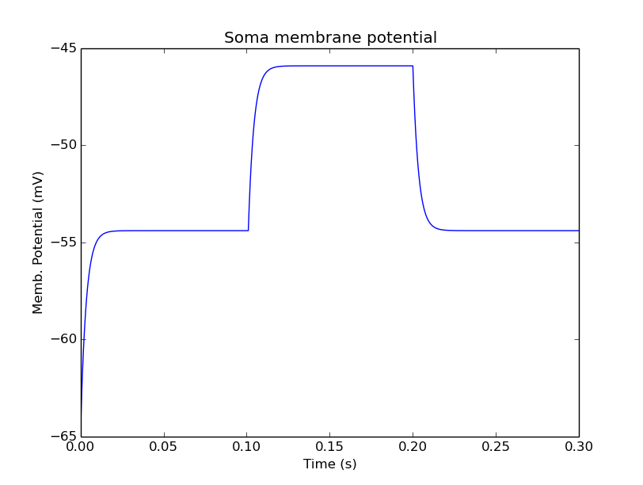
Plot for current input to passive compartment¶
When we run this we see an initial depolarization as the soma settles from its initial -65 mV to a resting Em = -54.4 mV. These are the original HH values, see the example above. At t = 0.1 seconds there is another depolarization due to the current injection, and at t = 0.2 seconds this goes back to the resting potential.
Simulate and display voltage clamp stimulus to soma¶
ex2.1_vclamp.py
This model introduces the voltage clamp stimulus on a passive compartment. As before, we add a few lines to define the stimulus and plot. This script displays both the membrane potential, and the holding current of the voltage clamp circuit as it charges and discharges the passive compartment model.
import moose
import rdesigneur as rd
rdes = rd.rdesigneur(
stimList = [['soma', '1', '.', 'vclamp', '-0.065 + (t>0.1 && t<0.2) * 0.02' ]],
plotList = [
['soma', '1', '.', 'Vm', 'Soma membrane potential'],
['soma', '1', 'vclamp', 'current', 'Soma holding current'],
]
)
rdes.buildModel()
moose.reinit()
moose.start( 0.3 )
rdes.display()
Here the stimList line tells the system to deliver a voltage clamp (vclamp) on the soma, starting at -65 mV and jumping up by 20 mV between 0.1 and 0.2 seconds. The plotList now includes two entries, and will generate two plots. The first is for plotting the soma membrane potential, just to be sure that the voltage clamp is doing its job.
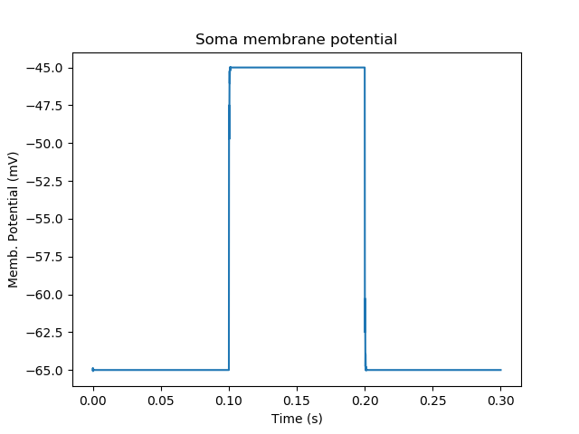
Plot for membrane potential in voltage clamp¶
The second graph plots the holding current. Note the capacitive transients.
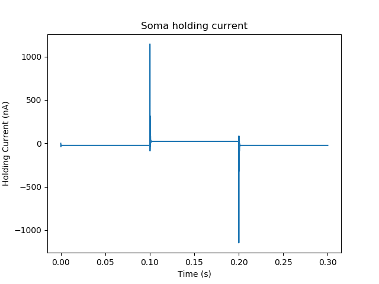
Plot for holding current for voltage clamp¶
HH Squid model in a single compartment¶
ex3.0_squid_currentPulse.py
Here we put the Hodgkin-Huxley squid model channels into a passive compartment. The HH channels are predefined as prototype channels for Rdesigneur,
import moose
import pylab
import rdesigneur as rd
rdes = rd.rdesigneur(
chanProto = [['make_HH_Na()', 'Na'], ['make_HH_K()', 'K']],
chanDistrib = [
['Na', 'soma', 'Gbar', '1200' ],
['K', 'soma', 'Gbar', '360' ]],
stimList = [['soma', '1', '.', 'inject', '(t>0.1 && t<0.2) * 1e-8' ]],
plotList = [['soma', '1', '.', 'Vm', 'Membrane potential']]
)
rdes.buildModel()
moose.reinit()
moose.start( 0.3 )
rdes.display()
Here we introduce two new model specification lines:
chanProto: This specifies which ion channels will be used in the model. Each entry here has two fields: the source of the channel definition, and (optionally) the name of the channel. In this example we specify two channels, an Na and a K channel using the original Hodgkin-Huxley parameters. As the source of the channel definition we use the name of the Python function that builds the channel. The make_HH_Na() and make_HH_K() functions are predefined but we can also specify our own functions for making prototypes. We could also have specified the channel prototype using the name of a channel definition file in ChannelML (a subset of NeuroML) format.
chanDistrib: This specifies where the channels should be placed over the geometry of the cell. Each entry in the chanDistrib list specifies the distribution of parameters for one channel using four entries:
[object_name, region_in_cell, parameter, expression_string]In this case the job is almost trivial, since we just have a single compartment named soma. So the line
['Na', 'soma', 'Gbar', '1200' ]means Put the Na channel in the soma, and set its maximal conductance density (Gbar) to 1200 Siemens/m^2.
As before we apply a somatic current pulse. Since we now have HH channels in the model, this generates action potentials.
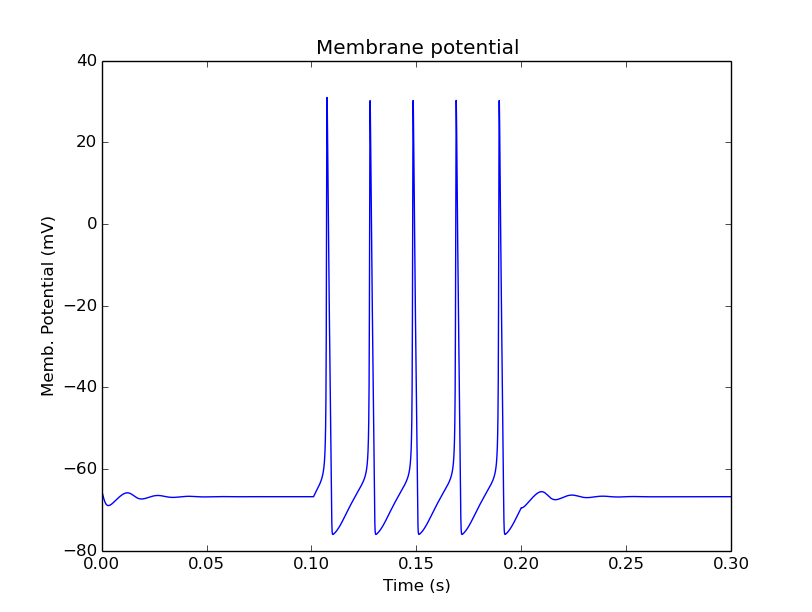
Plot for HH squid simulation¶
There are several interesting things to do with the model by varying stimulus parameters:
Change injection current.
Put in a protocol to get rebound action potential.
Put in a current ramp, and run it for a different duration
Put in a frequency chirp, and see how the squid model is tuned to a certain frequency range.
Modify channel or passive parameters. See if it still fires.
Try the frequency chirp on the cell with parameters changed. Does the tuning change?
HH Squid model with voltage clamp¶
ex3.1_squid_vclamp.py
This is the same squid model, but now we add a voltage clamp to the squid and monitor the holding current. This stimulus line is identical to ex2.1.
import moose
import pylab
import rdesigneur as rd
rdes = rd.rdesigneur(
chanProto = [['make_HH_Na()', 'Na'], ['make_HH_K()', 'K']],
chanDistrib = [
['Na', 'soma', 'Gbar', '1200' ],
['K', 'soma', 'Gbar', '360' ]],
stimList = [['soma', '1', '.', 'vclamp', '-0.065 + (t>0.1 && t<0.2) * 0.02' ]],
plotList = [
['soma', '1', '.', 'Vm', 'Membrane potential'],
['soma', '1', 'vclamp', 'current', 'Soma holding current']
]
)
rdes.buildModel()
moose.reinit()
moose.start( 0.3 )
rdes.display()
Here we see the classic HH current response, a downward brief deflection due to the Na channel, and a slower upward sustained current due to the K delayed rectifier.
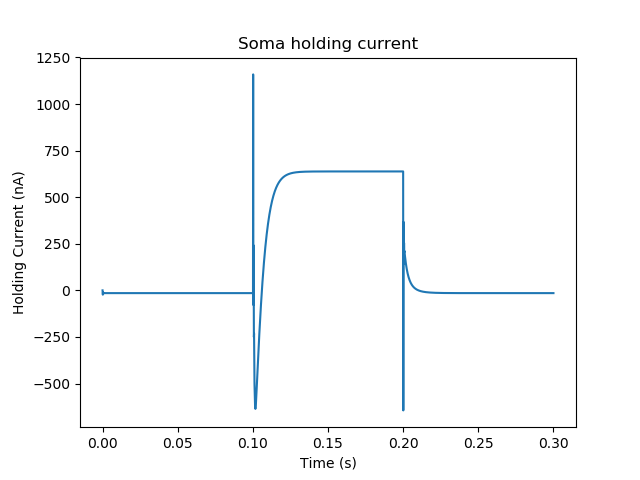
Plot for HH squid voltage clamp pulse.¶
Here are some suggestions for further exploration:
Monitor individual channel currents through additional plots.
Convert this into a voltage clamp series. Easiest way to do this is to complete the rdes.BuildModel, then delete the Function object on the /model/elec/soma/vclamp. Now you can simply set the 'command' field of the vclamp in a for loop, going from -ve to +ve voltages. Remember, SI units. You may wish to capture the plot vectors each cycle. The plot vectors are accessed by something like
moose.element( '/model/graphs/plot1' ).vector
HH Squid model in an axon¶
ex3.2_squid_axon_propgn.py
Here we put the Hodgkin-Huxley squid model into a long compartment that is subdivided into many segments, so that we can watch action potentials propagate. Most of this example is boilerplate code to build a spiral axon. There is a short rdesigneur segment that takes the spiral axon prototype and populates it with channels, and sets up the display. Later examples will show you how to read morphology files to specify the neuronal geometry.
import numpy as np
import moose
import pylab
import rdesigneur as rd
numAxonSegments = 200
comptLen = 10e-6
comptDia = 1e-6
RM = 1.0
RA = 10.0
CM = 0.01
def makeAxonProto():
axon = moose.Neuron( '/library/axon' )
prev = rd.buildCompt( axon, 'soma', RM = RM, RA = RA, CM = CM, dia = 10e-6, x=0, dx=comptLen)
theta = 0
x = comptLen
y = 0.0
for i in range( numAxonSegments ):
dx = comptLen * np.cos( theta )
dy = comptLen * np.sin( theta )
r = np.sqrt( x * x + y * y )
theta += comptLen / r
compt = rd.buildCompt( axon, 'axon' + str(i), RM = RM, RA = RA, CM = CM, x = x, y = y, dx = dx, dy = dy, dia = comptDia )
moose.connect( prev, 'axial', compt, 'raxial' )
prev = compt
x += dx
y += dy
return axon
moose.Neutral( '/library' )
makeAxonProto()
rdes = rd.rdesigneur(
chanProto = [['make_HH_Na()', 'Na'], ['make_HH_K()', 'K']],
cellProto = [['elec','axon']],
chanDistrib = [
['Na', '#', 'Gbar', '1200' ],
['K', '#', 'Gbar', '360' ]],
stimList = [['soma', '1', '.', 'inject', '(t>0.01 && t<0.2) * 2e-11' ]],
plotList = [['soma', '1', '.', 'Vm', 'Membrane potential']],
moogList = [['#', '1', '.', 'Vm', 'Vm (mV)']]
)
rdes.buildModel()
moose.reinit()
rdes.displayMoogli( 0.00005, 0.05, 0.0 )
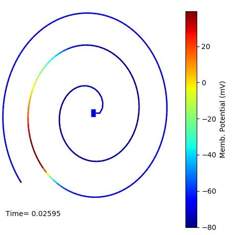
Axon with propagating action potential¶
Note how we explicitly create the prototype axon on '/library', and then specify it using the cellProto line in the rdesigneur. The moogList specifies the 3-D display. See below for how to set up and use these displays.
Action potential collision in HH Squid axon model¶
ex3.3_AP_collision.py
This is identical to the previous example, except that now we deliver current injection at at two points, the soma and a point along the axon. The modified stimulus line is:
...
stimList = [['soma', '1', '.', 'inject', '(t>0.01 && t<0.2) * 2e-11' ],
['axon100', '1', '.', 'inject', '(t>0.01 && t<0.2) * 3e-11' ]],
...
Watch how the AP is triggered bidirectionally from the stimulus point on the 100th segment of the axon, and observe what happens when two action potentials bump into each other.
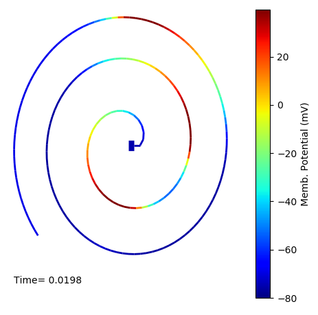
Colliding action potentials¶
HH Squid model in a myelinated axon¶
ex3.4_myelinated_axon.py
This is a curious cross-species chimera model, where we embed the HH equations into a myelinated example model. As for the regular axon above, most of the example is boilerplate setup code. Note how we restrict the HH channels to the nodes of Ranvier using a conditional test for the diameter of the axon segment.
import numpy as np
import moose
import pylab
import rdesigneur as rd
numAxonSegments = 405
nodeSpacing = 100
comptLen = 10e-6
comptDia = 2e-6 # 2x usual
RM = 100.0 # 10x usual
RA = 5.0
CM = 0.001 # 0.1x usual
nodeDia = 1e-6
nodeRM = 1.0
nodeCM = 0.01
def makeAxonProto():
axon = moose.Neuron( '/library/axon' )
x = 0.0
y = 0.0
prev = rd.buildCompt( axon, 'soma', RM = RM, RA = RA, CM = CM, dia = 10e-6, x=0, dx=comptLen)
theta = 0
x = comptLen
for i in range( numAxonSegments ):
r = comptLen
dx = comptLen * np.cos( theta )
dy = comptLen * np.sin( theta )
r = np.sqrt( x * x + y * y )
theta += comptLen / r
if i % nodeSpacing == 0:
compt = rd.buildCompt( axon, 'axon' + str(i), RM = nodeRM, RA = RA, CM = nodeCM, x = x, y = y, dx = dx, dy = dy, dia = nodeDia )
else:
compt = rd.buildCompt( axon, 'axon' + str(i), RM = RM, RA = RA, CM = CM, x = x, y = y, dx = dx, dy = dy, dia = comptDia )
moose.connect( prev, 'axial', compt, 'raxial' )
prev = compt
x += dx
y += dy
return axon
moose.Neutral( '/library' )
makeAxonProto()
rdes = rd.rdesigneur(
chanProto = [['make_HH_Na()', 'Na'], ['make_HH_K()', 'K']],
cellProto = [['elec','axon']],
chanDistrib = [
['Na', '#', 'Gbar', '12000 * (dia < 1.5e-6)' ],
['K', '#', 'Gbar', '3600 * (dia < 1.5e-6)' ]],
stimList = [['soma', '1', '.', 'inject', '(t>0.01 && t<0.2) * 1e-10' ]],
plotList = [['soma,axon100,axon200,axon300,axon400', '1', '.', 'Vm', 'Membrane potential']],
moogList = [['#', '1', '.', 'Vm', 'Vm (mV)']]
)
rdes.buildModel()
for i in moose.wildcardFind( "/model/elec/#/Na" ):
print i.parent.name, i.Gbar
moose.reinit()
rdes.displayMoogli( 0.00005, 0.05, 0.0 )
When you run the example, keep an eye out for a few things:
saltatory conduction: This is the way the action potential jumps from one node of Ranvier to the next. Between the nodes it is just passive propagation.
Failure to propagate: Observe that the second and fourth action potentials fails to trigger propagation along the axon. Here we have specially tuned the model properties so that this happens. With a larger RA of 10.0, the model will be more reliable.
Speed: Compare the propagation speed with the previous, unmyelinated axon. Note that the current model is larger!
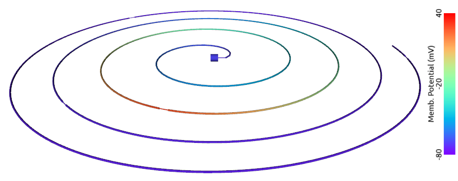
Myelinated axon with propagating action potential¶
Alternate (non-squid) way to define soma¶
ex4.0_scaledSoma.py
The default HH-squid axon is not a very convincing soma. Rdesigneur offers a somewhat more general way to define the soma in the cell prototype line.
import moose
import pylab
import rdesigneur as rd
rdes = rd.rdesigneur(
# cellProto syntax: ['somaProto', 'name', dia, length]
cellProto = [['somaProto', 'soma', 20e-6, 200e-6]],
chanProto = [['make_HH_Na()', 'Na'], ['make_HH_K()', 'K']],
chanDistrib = [
['Na', 'soma', 'Gbar', '1200' ],
['K', 'soma', 'Gbar', '360' ]],
stimList = [['soma', '1', '.', 'inject', '(t>0.01 && t<0.05) * 1e-9' ]],
plotList = [['soma', '1', '.', 'Vm', 'Membrane potential']],
moogList = [['#', '1', '.', 'Vm', 'Vm (mV)']]
)
rdes.buildModel()
soma = moose.element( '/model/elec/soma' )
print( 'Soma dia = {}, length = {}'.format( soma.diameter, soma.length ) )
moose.reinit()
rdes.displayMoogli( 0.0005, 0.06, 0.0 )
Here the crucial line is the cellProto line. There are four arguments here:
['somaProto', 'name', dia, length]
The first argument tells the system to use a prototype soma, that is a single cylindrical compartment.
The second argument is the name to give the cell.
The third argument is the diameter. Note that this is a double, not a string.
The fourth argument is the length of the cylinder that makes up the soma. This too is a double, not a string. The cylinder is oriented along the x axis, with one end at (0,0,0) and the other end at (length, 0, 0).
This is what the soma looks like:
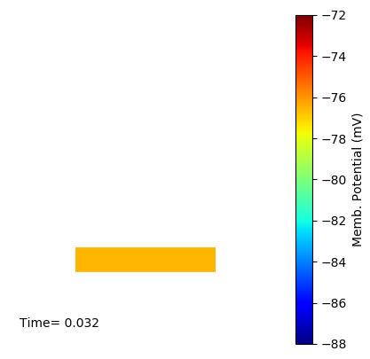
Image of soma.¶
It a somewhat elongated soma, being a cylinder 10 times as long as it is wide.
Ball-and-stick model of a neuron¶
ex4.1_ballAndStick.py
A somewhat more electrically reasonable model of a neuron has a soma and a single dendrite, which can itself be subdivided into segments so that it can exhibit voltage gradients, have channel and receptor distributions, and so on. This is accomplished in rdesigneur using a variant of the cellProto syntax.
import moose
import pylab
import rdesigneur as rd
rdes = rd.rdesigneur(
# cellProto syntax: ['ballAndStick', 'name', somaDia, somaLength, dendDia, dendLength, numDendSegments ]
# The numerical arguments are all optional
cellProto = [['ballAndStick', 'soma', 20e-6, 20e-6, 4e-6, 500e-6, 10]],
chanProto = [['make_HH_Na()', 'Na'], ['make_HH_K()', 'K']],
chanDistrib = [
['Na', 'soma', 'Gbar', '1200' ],
['K', 'soma', 'Gbar', '360' ],
['Na', 'dend#', 'Gbar', '400' ],
['K', 'dend#', 'Gbar', '120' ]
],
stimList = [['soma', '1', '.', 'inject', '(t>0.01 && t<0.05) * 1e-9' ]],
plotList = [['soma', '1', '.', 'Vm', 'Membrane potential']],
moogList = [['#', '1', '.', 'Vm', 'Vm (mV)']]
)
rdes.buildModel()
soma = moose.element( '/model/elec/soma' )
moose.reinit()
rdes.displayMoogli( 0.0005, 0.06, 0.0 )
As before, the cellProto line plays a key role. Here, because we have a long dendrite, we have a few more numerical arguments. All of the numerical arguments are optional.
['ballAndStick', 'name', somaDia, somaLength, dendDia, dendLength, numDendSegments ]
The first argument specifies a ballAndStick model: soma + dendrite. The length of the dendrite is along the x axis. The soma is a single segment, the dendrite can be more than one.
The second argument is the name to give the cell.
Arg 3 is the soma diameter, as a double.
Arg 4 is the length of the soma, as a double.
Arg 5 is the diameter of the dendrite, as a double.
Arg 6 is the length of the dendrite, as a double.
Arg 7 is the number of segments into which the dendrite should be divided. This is a positive integer greater than 0.
This is what the ball-and-stick cell looks like:
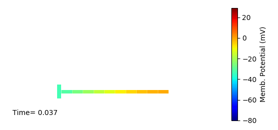
Image of ball and stick cell.¶
In this version of the 3-D display, the soma is displayed as a bit blocky rather than round. Note that we have populated the dendrite with Na and K channels and it has 10 segments, so it supports action potential propagation. The snapshot illustrates this.
Here are some things to try:
Change the length of the dendrite
Change the number of segments. Explore what it does to accuracy. How will you know that you have an accurate model?
Benchmarking simulation speed¶
ex4.2_ballAndStickSpeed.py
The ball-and-stick model gives us an opportunity to check out your system and how computation scales with model size. While we're at it we'll deliver a sine-wave stimulus just to see how it can be done. The test model is very similar to the previous one, ex4.1:
import moose
import pylab
import rdesigneur as rd
import time
rdes = rd.rdesigneur(
cellProto = [['ballAndStick', 'soma', 20e-6, 20e-6, 4e-6, 500e-6, 10]],
chanProto = [['make_HH_Na()', 'Na'], ['make_HH_K()', 'K']],
chanDistrib = [
['Na', 'soma', 'Gbar', '1200' ],
['K', 'soma', 'Gbar', '360' ],
['Na', 'dend#', 'Gbar', '400' ],
['K', 'dend#', 'Gbar', '120' ]
],
stimList = [['soma', '1', '.', 'inject', '(1+cos(t/10))*(t>31.4 && t<94) * 0
.2e-9' ]],
plotList = [
['soma', '1', '.', 'Vm', 'Membrane potential'],
['soma', '1', '.', 'inject', 'Stimulus current']
],
)
rdes.buildModel()
runtime = 100
moose.reinit()
t0= time.time()
moose.start( runtime )
print "Real time to run {} simulated seconds = {} seconds".format( runtime, time
.time() - t0 )
rdes.display()
While the real point of this simulation is to check speed, it does illustrate how to deliver a stimulus shaped like a sine wave:
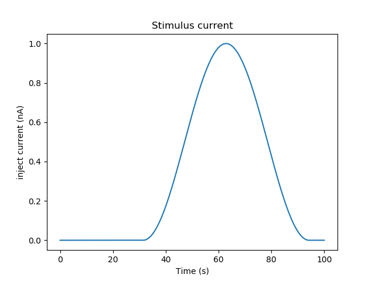
Sine-wave shaped stimulus.¶
We can see that the cell has a peculiar response to this. Not surprising, as the cell uses HH channels which are not good at rate coding.
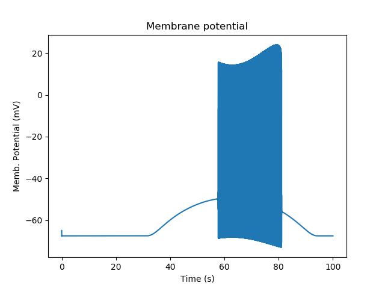
Spiking response to sine-wave shaped stimulus.¶
As a reference point, on a fast 2018 laptop this benchmark runs in 5.4 seconds. Some more things to try for benchmarking:
How slow does it get if you turn on the 3-D moogli display?
Is it costlier to run 2 compartments for 1000 seconds, or 200 compartments for 10 seconds?
Synaptic stimulus: random (Possion)¶
ex5.0_random_syn_input.py
In this example we introduce synaptic inputs: both the receptor channels and a means for stimulating the channels. We do this in a passive model.
import moose
import rdesigneur as rd
rdes = rd.rdesigneur(
cellProto = [['somaProto', 'soma', 20e-6, 200e-6]],
chanProto = [['make_glu()', 'glu']],
chanDistrib = [['glu', 'soma', 'Gbar', '1' ]],
stimList = [['soma', '0.5', 'glu', 'randsyn', '50' ]],
# Deliver stimulus to glu synapse on soma, at mean 50 Hz Poisson.
plotList = [['soma', '1', '.', 'Vm', 'Soma membrane potential']]
)
rdes.buildModel()
moose.reinit()
moose.start( 0.3 )
rdes.display()
Most of the rdesigneur setup uses familiar syntax.
Novelty 1: we use the default built-in glutamate receptor model, in chanProto. We just put it in the soma at a max conductance of 1 Siemen/sq metre.
Novelty 2: We specify a new kind of stimulus in the stimList:
['soma', '0.5', 'glu', 'randsyn', '50' ]
Most of this is similar to previous stimLists.
arg0: 'soma': the named compartments in the cell to populate with the glu receptor
arg1: '0.5': Tell the system to use a uniform synaptic weight of 0.5. This argument could be a more complicated expression incorporating spatial arguments. Here it is just uniform.
arg2: 'glu': Which receptor to stimulate
arg3: 'randsyn': Apply random (Poisson) synaptic input.
arg4: '50': Mean firing rate of the Poisson input. Note that this last argument could be a function of time and hence is quite versatile.
As the model has no voltage-gated channels, we do not see spiking.
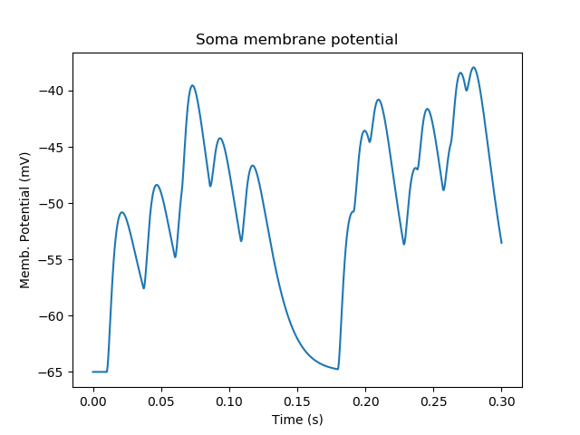
Random synaptic input with a Poisson distribution.¶
Things to try: Vary the rate and the weight of the synaptic input.
Synaptic stimulus: periodic¶
ex5.1_periodic_syn_input.py
This is almost identical to 5.0, except that the input is now perfectly
periodic. The one change is of an argument in the stimList to say
periodicsyn rather than randsyn.
import moose
import rdesigneur as rd
rdes = rd.rdesigneur(
cellProto = [['somaProto', 'soma', 20e-6, 200e-6]],
chanProto = [['make_glu()', 'glu']],
chanDistrib = [['glu', 'soma', 'Gbar', '1' ]],
# Deliver stimulus to glu synapse on soma, periodically at 50 Hz.
stimList = [['soma', '0.5', 'glu', 'periodicsyn', '50' ]],
plotList = [['soma', '1', '.', 'Vm', 'Soma membrane potential']]
)
rdes.buildModel()
moose.reinit()
moose.start( 0.3 )
rdes.display()
As designed, we get periodically firing synaptic input.
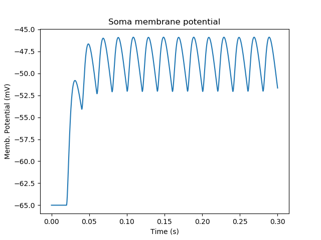
Periodic synaptic input¶
Reaction system in a single compartment¶
ex6_chem_osc.py
Here we use the compartment as a place in which to embed a chemical model. The chemical oscillator model is predefined in the rdesigneur prototypes. Its general form is:
s ---a---> a // s goes to a, catalyzed by a.
s ---a---> b // s goes to b, catalyzed by a.
a ---b---> s // a goes to s, catalyzed by b.
b -------> s // b is degraded irreversibly to s
Here is the script:
import moose
import pylab
import rdesigneur as rd
rdes = rd.rdesigneur(
turnOffElec = True,
diffusionLength = 1e-3, # Default diffusion length is 2 microns
chemProto = [['makeChemOscillator()', 'osc']],
chemDistrib = [['osc', 'soma', 'install', '1' ]],
plotList = [['soma', '1', 'dend/a', 'conc', 'a Conc'],
['soma', '1', 'dend/b', 'conc', 'b Conc']]
)
rdes.buildModel()
b = moose.element( '/model/chem/dend/b' )
b.concInit *= 5
moose.reinit()
moose.start( 200 )
rdes.display()
In this special case we set the turnOffElec flag to True, so that Rdesigneur only sets up chemical and not electrical calculations. This makes the calculations much faster, since we disable electrical calculations and delink chemical calculations from them.
We also have a line which sets the diffusionLength to 1 mm, so that
it is bigger than the 0.5 mm squid axon segment in the default
compartment. If you don't do this the system will subdivide the
compartment into the default 2 micron voxels for the purposes of putting
in a reaction-diffusion system. We discuss this case below.
Note how the plotList is done here. To remind you, each entry has five arguments
[region_in_cell, region_expression, moose_object, parameter, title_of_plot]
The change from the earlier usage is that the moose_object now
refers to a chemical entity, in this example the molecule dend/a. The
simulator builds a default chemical compartment named dend to hold the
reactions defined in the chemProto. What we do in this plot is to
select molecule a sitting in dend, and plot its concentration. Then
we do this again for molecule b.
After the model is built, we add a couple of lines to change the initial concentration of the molecular pool b. Note its full path within MOOSE: /model/chem/dend/b. It is scaled up 5x to give rise to slowly decaying oscillations.
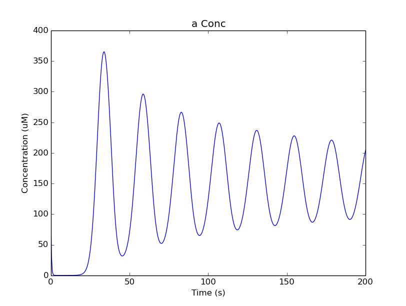
Plot for single-compartment reaction simulation¶
Reaction-diffusion system¶
ex7.0_spatial_chem_osc.py
In order to see what a reaction-diffusion system looks like, we assign the
diffusionLength expression in the previous example to a much shorter
length, and add a couple of lines to set up 3-D graphics for the
reaction-diffusion product:
import moose
import pylab
import rdesigneur as rd
rdes = rd.rdesigneur(
turnOffElec = True,
#This subdivides the length of the soma into 2 micron voxels
diffusionLength = 2e-6,
chemProto = [['makeChemOscillator()', 'osc']],
chemDistrib = [['osc', 'soma', 'install', '1' ]],
plotList = [['soma', '1', 'dend/a', 'conc', 'Concentration of a'],
['soma', '1', 'dend/b', 'conc', 'Concentration of b']],
moogList = [['soma', '1', 'dend/a', 'conc', 'a Conc', 0, 360 ]]
)
rdes.buildModel()
bv = moose.vec( '/model/chem/dend/b' )
bv[0].concInit *= 2
bv[-1].concInit *= 2
moose.reinit()
rdes.displayMoogli( 1, 400, rotation = 0, azim = np.pi/2, elev = 0.0 )
This is the new value for diffusion length.
diffusionLength = 2e-3,
With this change we tell rdesigneur to use the diffusion length of 2 microns. This happens to be the default too. The 500-micron axon segment is now subdivided into 250 voxels, each of which has a reaction system and diffusing molecules. To make it more picturesque, we have added a line after the plotList, to display the outcome in 3-D:
moogList = [['soma', '1', 'dend/a', 'conc', 'a Conc', 0, 360 ]]
This line says: take the model compartments defined by soma as the
region to display, do so throughout the the geometry (the 1
signifies this), and over this range find the chemical entity defined by
dend/a. For each a molecule, find the conc and dsiplay it.
There are two optional arguments, 0 and 360, which specify the
low and high value of the displayed variable.
In order to initially break the symmetry of the system, we change the initial concentration of molecule b at each end of the cylinder:
bv[0].concInit *= 2
bv[-1].concInit *= 2
If we didn't do this the entire system would go through a few cycles of decaying oscillation and then reach a boring, spatially uniform, steady state. Try putting an initial symmetry break elsewhere to see what happens.
To display the concenctration changes in the 3-D soma as the simulation runs, we use the line
rdes.displayMoogli( 1, 400, rotation = 0, azim = np.pi/2, elev = 0.0 )
The arguments mean: displayMoogli( frametime, runtime, rotation, azimuth, elevation ) Here,
frametime = time by which simulation advances between display updates
runtime = Total simulated time
rotation = angle by which display rotates in each frame, in radians.
azimuth = Azimuth angle of view point, in radians
elevation = elevation angle of view point, in radians
When we run this, we first get a 3-D display with the oscillating reaction-diffusion system making its way inward from the two ends. After the simulation ends the plots for all compartments for the whole run come up.
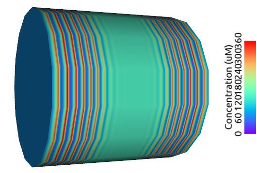
Display for oscillatory reaction-diffusion simulation¶
For those who would rather use the much simpler matplotlib 3-D display option, this is what the same simulation looks like:
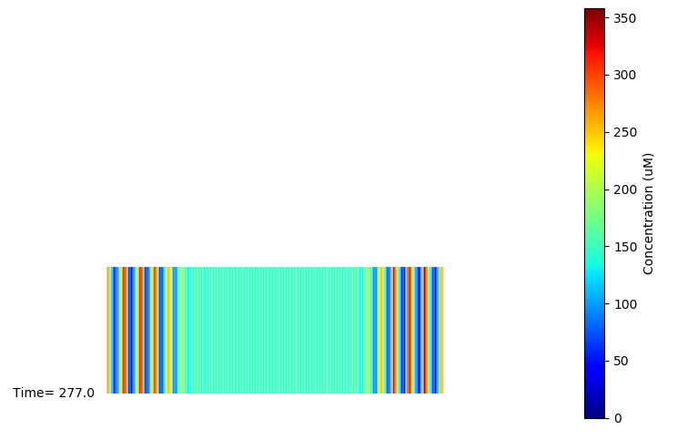
Display for oscillatory reac-diff simulation using matplotlib¶
Primer on using the 3-D MOOGLI display¶
There are two variants of the MOOGLI display. The first, named Moogli, uses OpenGL and OpenSceneGraph. It is fast to display, slow to load, and difficult to compile. It produces much better looking 3-D graphics. The second is a fallback interface using mplot3d, which is a library of Matplotlib and so should be generally available. It is slower to display, faster to load, but needs no special compilation. It uses stick graphics and though it conveys much the same information, isn't as nice to look at as the original Moogli. Its controls are more or less the same but less smooth than the original Moogli.
Here is a short primer on the 3-D display controls.
Roll, pitch, and yaw: Use the letters r, p, and y. To rotate backwards, use capitals.
Zoom out and in: Use the , and . keys, or their upper-case equivalents, < and >. Easier to remember if you think in terms of the upper-case.
Left/right/up/down: Arrow keys.
Quit: control-q or control-w.
You can also use the mouse or trackpad to control most of the above.
By default rdesigneur gives Moogli a small rotation each frame. It is the rotation argument in the line:
displayMoogli( frametime, runtime, rotation )
These controls operate over and above this rotation, but the rotation continues. If you set the rotation to zero you can, with a suitable flick of the mouse, get the image to rotate in any direction you choose as long as the window is updating.
Diffusion of a single molecule¶
ex7.1_diffusive_gradient.py
This is simply a test model to confirm that simple diffusion happens as expected. While the model is just that of a single pool, we spend a few lines taking snapshots of the spatial profile of this pool.
import moose
import pylab
import re
import rdesigneur as rd
import matplotlib.pyplot as plt
import numpy as np
moose.Neutral( '/library' )
moose.Neutral( '/library/diffn' )
moose.CubeMesh( '/library/diffn/dend' )
A = moose.Pool( '/library/diffn/dend/A' )
A.diffConst = 1e-10
rdes = rd.rdesigneur(
turnOffElec = True,
diffusionLength = 1e-6,
chemProto = [['diffn', 'diffn']],
chemDistrib = [['diffn', 'soma', 'install', '1' ]],
moogList = [
['soma', '1', 'dend/A', 'conc', 'A Conc', 0, 360 ]
]
)
rdes.buildModel()
rdes.displayMoogli( 1, 2, rotation = 0, azim = -np.pi/2, elev = 0.0, block = False )
av = moose.vec( '/model/chem/dend/A' )
for i in range(10):
av[i].concInit = 1
moose.reinit()
plist = []
for i in range( 20 ):
plist.append( av.conc[:200] )
moose.start( 2 )
fig = plt.figure( figsize = ( 10, 12 ) )
plist = np.array( plist ).T
plt.plot( range( 0, 200 ), plist )
plt.xlabel( "position ( microns )" )
plt.ylabel( "concentration ( mM )" )
plt.show( block = True )
Here are the snapshots, overlaid in a single plot:
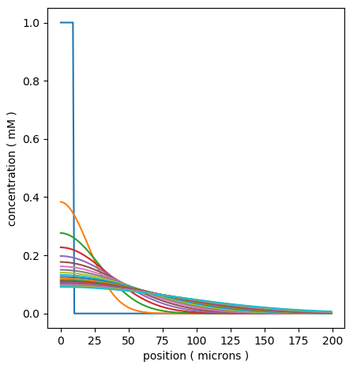
Display for simple time-series of spread of a diffusing molecule using matplotlib¶
Calcium-induced calcium release¶
ex7.2_CICR.py
This is a somewhat more complex reaction-diffusion system, involving calcium release from intracellular stores that propagates in a wave of activity along a dendrite. This example demonstrates the use of endo compartments.
Endo-compartments, as the name suggests, represent compartments that sit within other cellular compartments. If the surround compartment is subdivided into N voxels, so is the endo- compartment. The rdesigneur system looks at the provided model, and if there are 2 compartments and the addEndoChemCompt flag is True, then the chemistry contained in the smaller of the two compartments is positioned in an endo compartment surrounded by the first compartment. Here we use the endo-compartment to represent the endoplasmic reticulum sitting inside the dendrite.
In the chemical model, we also introduce a new MOOSE class, ConcChan. These act as membrane pores whose permeability scales with number of channels in the open state. The IP3 receptor in this model is implemented as a ConcChan which opens due to binding to IP3 and Calcium. This leads to the release of more calcium from the ER, and this feedback loop develops into a propagating-wave oscillation.
import moose
import pylab
import rdesigneur as rd
rdes = rd.rdesigneur(
turnOffElec = True,
chemDt = 0.005,
chemPlotDt = 0.02,
diffusionLength = 1e-6,
useGssa = False,
addSomaChemCompt = False,
addEndoChemCompt = True,
# cellProto syntax: ['somaProto', 'name', dia, length]
cellProto = [['somaProto', 'soma', 2e-6, 10e-6]],
chemProto = [['./chem/CICRwithConcChan.g', 'chem']],
chemDistrib = [['chem', 'soma', 'install', '1' ]],
plotList = [
['soma', '1', 'dend/CaCyt', 'conc', 'Dendritic Ca'],
['soma', '1', 'dend/CaCyt', 'conc', 'Dendritic Ca', 'wave'],
['soma', '1', 'dend_endo/CaER', 'conc', 'ER Ca'],
['soma', '1', 'dend/ActIP3R', 'conc', 'active IP3R'],
],
)
rdes.buildModel()
IP3 = moose.element( '/model/chem/dend/IP3' )
IP3.vec.concInit = 0.004
IP3.vec[0].concInit = 0.02
moose.reinit()
moose.start( 40 )
rdes.display()
Note how the dendritic calcium is displayed both as a time-series plot and as a wave plot, which presents the time-evolution of the calcium as a function of position in successive image frames.
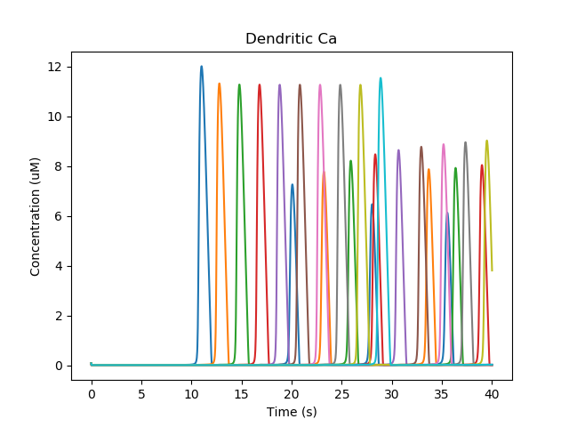
Time-series plot of dendritic calcium. Different colors represent different voxels in the dendrite.¶
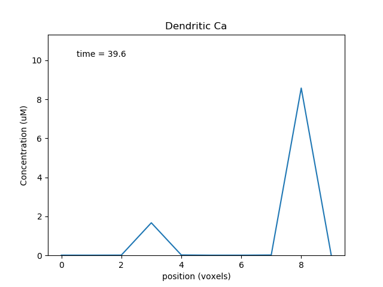
Place holder for time-evolving movie of dendritic calcium as a function of position along the dendrite.¶
Intracellular transport¶
ex7.3_simple_transport.py
This illustrates how intracellular transport works in MOOSE. We have a an elongated soma in which molecules start out at the left and are transported to the right. Note that they spread out as they go along, This is because the transport is implemented as drift-diffusion, in which a fraction of the molecules move to the next location each timestep. The equation is
flux = motorConst * conc / spacing
for a uniform cylinder. MOOSE applies suitable scaling terms if the neuronal geometry is non-uniform.
import moose
import numpy as np
import pylab
import rdesigneur as rd
moose.Neutral( '/library' )
moose.Neutral( '/library/transp' )
moose.CubeMesh( '/library/transp/dend' )
A = moose.Pool( '/library/transp/dend/A' )
A.diffConst = 0
A.motorConst = 1e-6 # Metres/sec
rdes = rd.rdesigneur(
turnOffElec = True,
#This subdivides the length of the soma into 0.5 micron voxels
diffusionLength = 0.5e-6,
cellProto = [['somaProto', 'soma', 2e-6, 50e-6]],
chemProto = [['transp', 'transp']],
chemDistrib = [['transp', 'soma', 'install', '1' ]],
plotList = [
['soma', '1', 'dend/A', 'conc', 'Concentration of A'],
['soma', '1', 'dend/A', 'conc', 'Concentration of A', 'wave'],
],
moogList = [['soma', '1', 'dend/A', 'conc', 'A Conc', 0, 20 ]]
)
rdes.buildModel()
moose.element( '/model/chem/dend/A[0]' ).concInit = 0.1
moose.reinit()
rdes.displayMoogli( 1, 80, rotation = 0, azim = -np.pi/2, elev = 0.0 )
In this example we explicitly create the single-molecule reaction system, and assign a motorConst of 1 micron/sec to the molecule A. We start off with all the molecules in a single voxel on the left of the cylinder, and then watch the molecules move. Once the molecules reach the end of the cylindrical soma, they have nowhere further to go so they pile up.
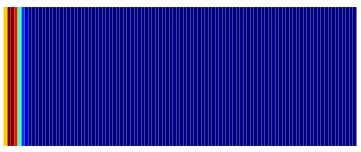
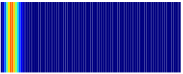
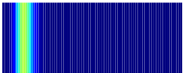
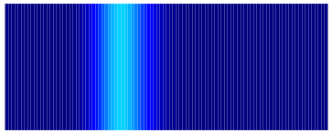
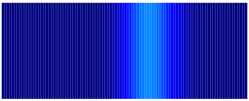
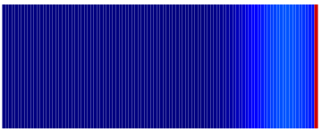
Frames at increasing intervals from the transport simulation showing spreading and piling up of the molecule at the right end of the cylinder.¶
Suggestions:
Play with different motor rates.
The motor constant sign detemines the direction of transport. See what happens if you get it going in the opposite direction.
Consider how you could avoid the buildup in the last voxel.
Consider how to achieve a nice exponential falloff over a much longer range than possible with diffusion.
Travelling oscillator¶
ex7.4_travelling_osc.py
Here we put a chemical oscillator into a cylinder, and activate motor transport in one of the molecules. The oscillatory zone slowly moves to the right, with an amplification in the last compartment due to end-effects.
import moose
import numpy as np
import pylab
import rdesigneur as rd
rdes = rd.rdesigneur(
turnOffElec = True,
diffusionLength = 2e-6,
chemProto = [['makeChemOscillator()', 'osc']],
chemDistrib = [['osc', 'soma', 'install', '1' ]],
plotList = [
['soma', '1', 'dend/a', 'conc', 'Concentration of a'],
['soma', '1', 'dend/b', 'conc', 'Concentration of b'],
['soma', '1', 'dend/a', 'conc', 'Concentration of a', 'wave'],
],
moogList = [['soma', '1', 'dend/a', 'conc', 'a Conc', 0, 360 ]]
)
a = moose.element( '/library/osc/kinetics/a' )
b = moose.element( '/library/osc/kinetics/b' )
s = moose.element( '/library/osc/kinetics/s' )
a.diffConst = 0
b.diffConst = 0
a.motorConst = 1e-6
rdes.buildModel()
moose.reinit()
rdes.displayMoogli( 1, 400, rotation = 0, azim = -np.pi/2, elev = 0.0 )
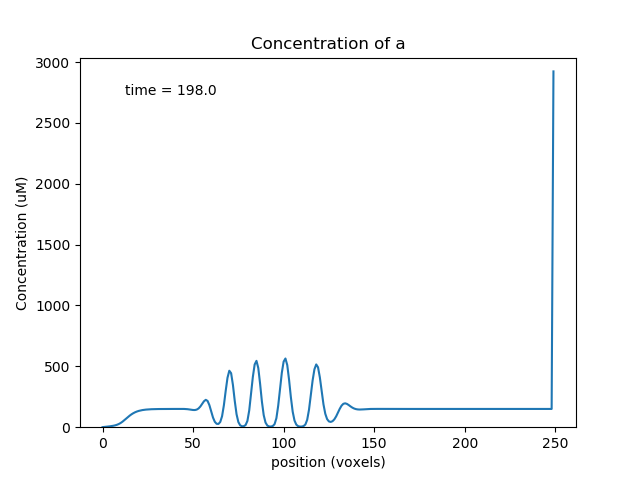
Snapshot of travelling oscillator waveform at t = 198.¶
Suggestions:
What happens if all molecules undergo transport?
What happens if b is transported opposite to a?
What happens if there is also diffusion?
Bidirectional transport¶
ex7.5_bidirectional_transport.py
This is almost identical to ex7.4, except that we implement bidirectional transport. Molecule a goes from left to right, and b and s go from right to left. Here we see that the system builds up with large oscillations in the middle as the molecules converge, then the peaks collapse when the molecules go away.
import moose
import numpy as np
import pylab
import rdesigneur as rd
rdes = rd.rdesigneur(
turnOffElec = True,
diffusionLength = 2e-6,
numWaveFrames = 50,
chemProto = [['makeChemOscillator()', 'osc']],
chemDistrib = [['osc', 'soma', 'install', '1' ]],
plotList = [
['soma', '1', 'dend/a', 'conc', 'Concentration of a', 'wave', 0, 1800],
['soma', '1', 'dend/b', 'conc', 'Concentration of b', 'wave', 0, 500],
['soma', '1', 'dend/s', 'conc', 'Concentration of s', 'wave', 0, 1200],
],
moogList = [['soma', '1', 'dend/a', 'conc', 'a Conc', 0, 600 ]]
)
a = moose.element( '/library/osc/kinetics/a' )
b = moose.element( '/library/osc/kinetics/b' )
s = moose.element( '/library/osc/kinetics/s' )
a.diffConst = 0
b.diffConst = 0
a.motorConst = 2e-6
b.motorConst = -2e-6
s.motorConst = -2e-6
rdes.buildModel()
moose.reinit()
rdes.displayMoogli( 1, 250, rotation = 0, azim = -np.pi/2, elev = 0.0 )
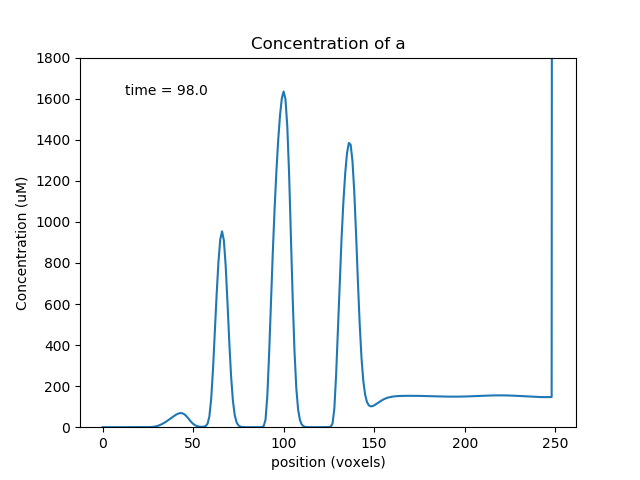
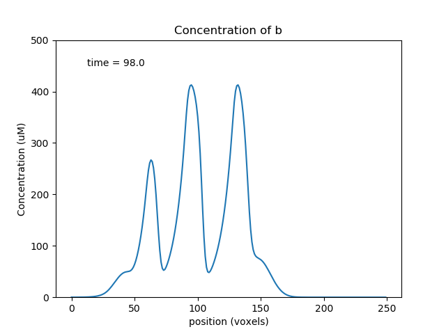
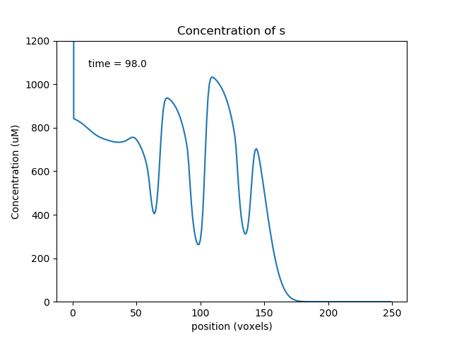
Above we see a, b, s at a point where the transport has collected the molecules toward the middle of the cylinder, so the oscillations are large. Below we see molecule a later, when it has gone past the b and s pools and so the reaction system is depleted and does not oscillate.
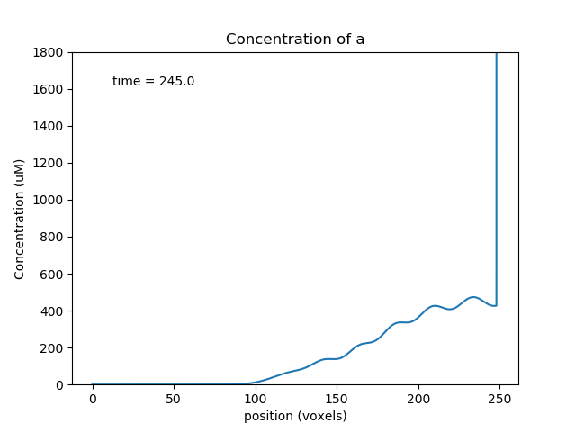
Controlling a reaction by a function¶
ex7.6_func_controls_reac_rate.py
This example illustrates how a function can be used to control a reaction rate. This kind of calculation is appropriate when we need to link different kinds of physical processses with chemical reactions, for example, membrane curvature with molecule accumulation. The use of functions to modify reaction rates should be avoided in purely chemical systems since they obscure the underlying chemistry, and do not map cleanly to stochastic calculations.
In this example we simply have a molecule C that controls the forward rate of a reaction that converts A to B. C is a function of location on the cylinder, and is fixed. In more elaborate computations we could have a function of multiple molecules, some of which could be changing and others could be buffered.
import numpy as np
import moose
import pylab
import rdesigneur as rd
def makeFuncRate():
model = moose.Neutral( '/library' )
model = moose.Neutral( '/library/chem' )
compt = moose.CubeMesh( '/library/chem/compt' )
compt.volume = 1e-15
A = moose.Pool( '/library/chem/compt/A' )
B = moose.Pool( '/library/chem/compt/B' )
C = moose.Pool( '/library/chem/compt/C' )
reac = moose.Reac( '/library/chem/compt/reac' )
func = moose.Function( '/library/chem/compt/reac/func' )
func.x.num = 1
func.expr = "(x0/1e8)^2"
moose.connect( C, 'nOut', func.x[0], 'input' )
moose.connect( func, 'valueOut', reac, 'setNumKf' )
moose.connect( reac, 'sub', A, 'reac' )
moose.connect( reac, 'prd', B, 'reac' )
A.concInit = 1
B.concInit = 0
C.concInit = 0
reac.Kb = 1
makeFuncRate()
rdes = rd.rdesigneur(
turnOffElec = True,
#This subdivides the 50-micron cylinder into 2 micron voxels
diffusionLength = 2e-6,
cellProto = [['somaProto', 'soma', 5e-6, 50e-6]],
chemProto = [['chem', 'chem']],
chemDistrib = [['chem', 'soma', 'install', '1' ]],
plotList = [['soma', '1', 'dend/A', 'conc', 'A conc', 'wave'],
['soma', '1', 'dend/C', 'conc', 'C conc', 'wave']],
)
rdes.buildModel()
C = moose.element( '/model/chem/dend/C' )
C.vec.concInit = [ 1+np.sin(x/5.0) for x in range( len(C.vec) ) ]
moose.reinit()
moose.start(10)
rdes.display()
We plot the controlling molecule C and the substrate molecule A as functions of position, using a waveplot. C remains fixed, and A decreases with time and space. A is smallest at about voxel 8, where the reaction rate, as controlled by C, is highest.
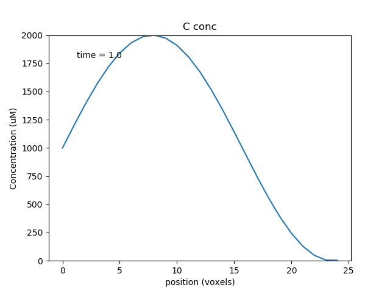
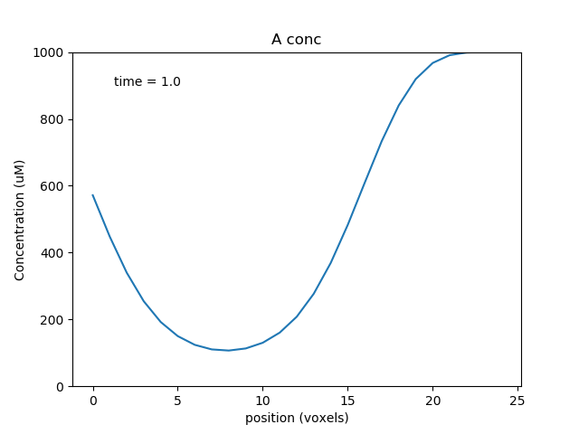
Multiscale models: single compartment¶
ex8.0_multiscale_KA_phosph.py
The next few examples are for the multiscale modeling that is the main purpose of rdesigneur and MOOSE as a whole. These are 'toy' examples in that the chemical and electrical signaling is simplified, but they exhibit dynamics that are of real interest.
The first example is of a bistable system where the feedback loop comprises of
calcium influx -> chemical activity -> channel modulation -> electrical activity -> calcium influx.
Calcium enters through voltage gated calcium channels, leads to enzyme activation and phosphorylation of a KA channel, which depolarizes the cell, so it spikes more, so more calcium enters.
import moose
import pylab
import rdesigneur as rd
rdes = rd.rdesigneur(
elecDt = 50e-6,
chemDt = 0.002,
chemPlotDt = 0.002,
# cellProto syntax: ['somaProto', 'name', dia, length]
cellProto = [['somaProto', 'soma', 12e-6, 12e-6]],
chemProto = [['./chem/chanPhosphByCaMKII.g', 'chem']],
chanProto = [
['make_Na()', 'Na'],
['make_K_DR()', 'K_DR'],
['make_K_A()', 'K_A' ],
['make_Ca()', 'Ca' ],
['make_Ca_conc()', 'Ca_conc' ]
],
# Some changes to the default passive properties of the cell.
passiveDistrib = [['soma', 'CM', '0.03', 'Em', '-0.06']],
chemDistrib = [['chem', 'soma', 'install', '1' ]],
chanDistrib = [
['Na', 'soma', 'Gbar', '300' ],
['K_DR', 'soma', 'Gbar', '250' ],
['K_A', 'soma', 'Gbar', '200' ],
['Ca_conc', 'soma', 'tau', '0.0333' ],
['Ca', 'soma', 'Gbar', '40' ]
],
adaptorList = [
[ 'dend/chan', 'conc', 'K_A', 'modulation', 0.0, 70 ],
[ 'Ca_conc', 'Ca', 'dend/Ca', 'conc', 0.00008, 2 ]
],
# Give a + pulse from 5 to 7s, and a - pulse from 20 to 21.
stimList = [['soma', '1', '.', 'inject', '((t>5 && t<7) - (t>20 && t<21)) * 1.0e-12' ]],
plotList = [
['soma', '1', '.', 'Vm', 'Membrane potential'],
['soma', '1', '.', 'inject', 'current inj'],
['soma', '1', 'K_A', 'Ik', 'K_A current'],
['soma', '1', 'dend/chan', 'conc', 'Unphosph K_A conc'],
['soma', '1', 'dend/Ca', 'conc', 'Chem Ca'],
],
)
rdes.buildModel()
moose.reinit()
moose.start( 30 )
rdes.display()
There is only one fundamentally new element in this script:
adaptor List: [source, sourceField, dest, destField, offset, scale] The adaptor list maps between molecular, electrical or even structural quantities in the simulation. At present it is linear mapping, in due course it may evolve to an arbitrary function.
The two adaptorLists in the above script do the following:
[ 'dend/chan', 'conc', 'K_A', 'modulation', 0.0, 70 ]:
Use the concentration of the 'chan' molecule in the 'dend' compartment, to modulate the conductance of the 'K_A' channel such that the basal conductance is zero and 1 millimolar of 'chan' results in a conductance that is 70 times greater than the baseline conductance of the channel, Gbar.
It is advisable to use the field 'modulation' on channels undergoing scaling, rather than to directly assign the conductance 'Gbar'. This is because Gbar is an absolute conductance, and therefore it is scaled to the area of the electrical segment. This makes it difficult to keep track of. Modulation is a simple multiplier term onto Gbar, and is therefore easier to work with.
[ 'Ca_conc', 'Ca', 'dend/Ca', 'conc', 0.00008, 2 ]:
Use the concentration of Ca as computed in the electrical model, to assign the concentration of molecule Ca on the dendrite compartment. There is a basal level of 80 nanomolar, and every unit of electrical Ca maps to 2 millimolar of chemical Ca.
The arguments in the adaptorList are:
Source and Dest: Strings. These can be either a molecular or an electrical object. To identify a molecular object, it should be prefixed with the name of the chemical compartment, which is one of dend, spine, psd. Thus dend/chan specifies a molecule named 'chan' sitting in the 'dend' compartment.
To identify an electrical object, just pass in its path, such as '.' or 'Ca_conc'.
Note that the adaptors do not need to know anything about the location. It is assumed that the adaptors do their job wherever the specified source and dest coexist. There is a subtlety here due to the different length and time scales. The rule of thumb is that the adaptor averages whichever one is subdivided more finely.
Example 1: Molecules are typically spatially partitioned into short voxels (micron-scale) compared to typical 100-micron electrical segments. So an adaptor going from molecules to, say, channel conductance, would average all the molecular voxels that fit in the electrical segment.
Example 2: Electrical activity is typically much faster than chemical. So an adaptor going from an electrical entity (Ca computed from channel opening) to molecules (Chemical Ca concentration) would average all the time-steps between updates to the molecule.
Fields: Strings. These are simply the field names on the objects coupled by the adaptors.
offset and scale: Doubles. At present the adaptor is just a straight-line conversion, obeying
y = mx + c. The computed output is y, averaged input is x, offset is c and scale is m.
There is a handy new line to specify cellular passive properties:
passiveDistrib: [path, field, value, field, value, ... ],
path: String. Specifies the object whose parameters are to be changed.
field: String. Name of the field on the object.
value: String, that is the value has to be enclosed in quotes. The value to be assigned to the object.
With these in place, the model behavior is rather neat. It starts out silent, then we apply 2 seconds of +ve current injection.
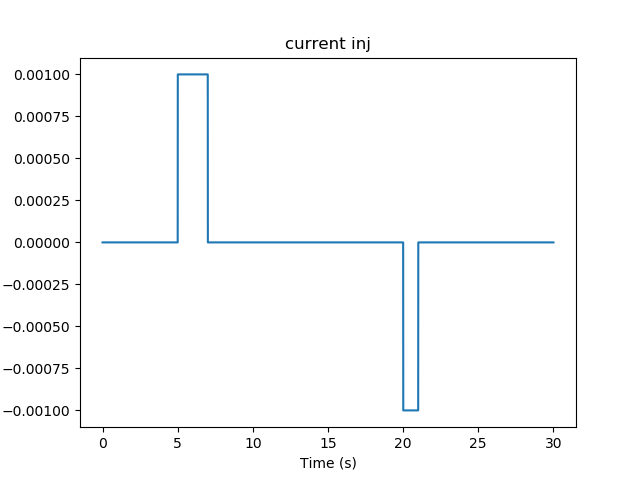
Current injection stimuli for multiscale model.¶
The cell fires briskly, and keeps firing even when the current injection drops to zero.
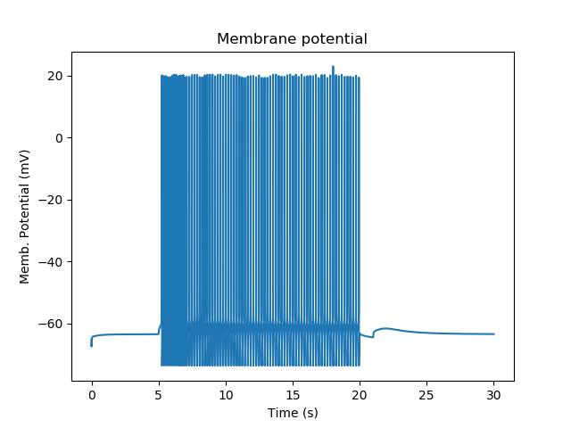
Firing responses of cell with multiscale signaling.¶
The firing of the neuron leads to Ca influx.
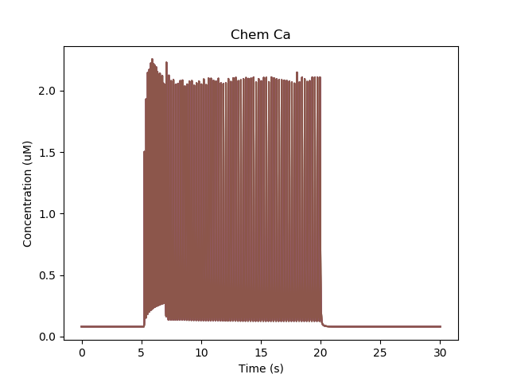
Calcium buildup in cell due to firing.¶
The chemical reactions downstream of Ca lead to phosphorylation of the K_A channel. Only the unphosphorylated K_A channel is active, so the net effect is to reduce K_A conductance while the Ca influx persists.
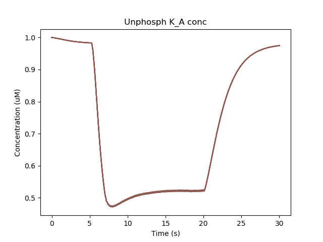
Removal of KA channel due to phosphorylation.¶
Since the phosphorylated form has low conductance, the cell becomes more excitable and keeps firing even when the current injection is stopped. It takes a later, -ve current injection to turn the firing off again.
Suggestions for things to do with the model:
Vary the adaptor settings, which couple electrical to chemical signaling and vice versa.
Play with the channel densities
Open the chem model in moosegui and vary its parameters too.
Multiscale model of CICR in dendrite triggered by synaptic input¶
ex8.1_synTrigCICR.py
In this model synaptic input arrives at a dendritic spine, leading to calcium influx through the NMDA receptor. An adaptor converts this influx to the concentration of a chemical species, and this then diffuses into the dendrite and sets off the CICR.
This example models Calcium events in three compartments: dendrite, ER inside dendrite, and spine. The signaling is a slight change from the toy model used in ex7.2_CICR.py. Note how the range of CICR wave propagation is limited by a domain of the dendrite in which the level of IP3 is elevated.
import moose
import pylab
import rdesigneur as rd
rdes = rd.rdesigneur(
turnOffElec = False,
chemDt = 0.002,
chemPlotDt = 0.02,
diffusionLength = 1e-6,
numWaveFrames = 50,
useGssa = False,
addSomaChemCompt = False,
addEndoChemCompt = True,
# cellProto syntax: ['ballAndStick', 'name', somaDia, somaLength, dendDia, dendLength, numDendSeg]
cellProto = [['ballAndStick', 'soma', 10e-6, 10e-6, 2e-6, 40e-6, 4]],
spineProto = [['makeActiveSpine()', 'spine']],
chemProto = [['./chem/CICRspineDend.g', 'chem']],
spineDistrib = [['spine', '#dend#', '10e-6', '0.1e-6']],
chemDistrib = [['chem', 'dend#,spine#,head#', 'install', '1' ]],
adaptorList = [
[ 'Ca_conc', 'Ca', 'spine/Ca', 'conc', 0.00008, 8 ]
],
stimList = [
['head0', '0.5', 'glu', 'periodicsyn', '1 + 40*(t>5 && t<6)'],
['head0', '0.5', 'NMDA', 'periodicsyn', '1 + 40*(t>5 && t<6)'],
['dend#', 'g>10e-6 && g<=31e-6', 'dend/IP3', 'conc', '0.0006' ],
],
plotList = [
['head#', '1', 'spine/Ca', 'conc', 'Spine Ca conc'],
['dend#', '1', 'dend/Ca', 'conc', 'Dend Ca conc'],
['dend#', '1', 'dend/Ca', 'conc', 'Dend Ca conc', 'wave'],
['dend#', '1', 'dend_endo/CaER', 'conc', 'ER Ca conc', 'wave'],
['soma', '1', '.', 'Vm', 'Memb potl'],
],
)
moose.seed( 1234 )
rdes.buildModel()
moose.reinit()
moose.start( 16 )
rdes.display()
The demo illustrates how to specify the range of elevated IP3 in the stimList using the second argument, which selects a geometric range of electrical compartments.
['dend#', 'g>10e-6 && g<=31e-6', 'dend/IP3', 'conc', '0.0006' ]
This means to look at all dendrite compartments (first argument), and select those which are between a geometrical distance g of 10 to 31 microns from the soma (second argument). The system then sets the IP3 concentration (third and fourth arguments) to 0.6 uM (last argument) for all the chemical voxels embedded in these dendrite compartments.
A note on defining the endo compartments: In cases like this, where the compartment identity isn't built into the chemical model definition, we need a heuristic to decide which compartment is which. The heuristic used in rdesigneur goes like this:
Sort chemical compartments in decreasing order by volume
If the addSomaChemCompt flag is true, they are assigned to soma, dendrite, spine-head, spine-psd, depending on how many compartments are specified. If the flag is false, the soma is omitted.
If the addEndoChemCompt is true, then alternate compartments are assigned to the endo_compartment. Here it is dend, dend_endo, spine-head. If we had six compartments defined (no soma) it would have been: dend, dend_endo, spine-head, spine-endo, psd, psd-endo. The psd-endo doesn't make a lot of biological sense, though.
When we run this model, we trigger a propagating Ca wave from about voxel number 16 of 40. It spreads in both directions, and comes to a halt at voxels 10 and 30, which mark the limits of the IP3 elevation zone.
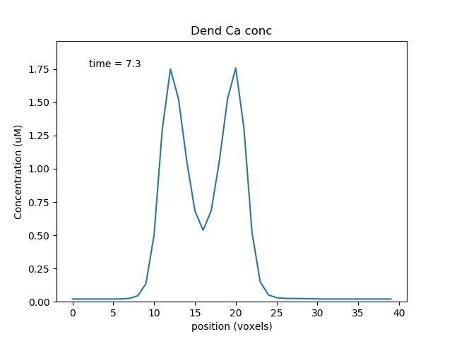
Calcium wave propagation along the dendrite¶
Note two subtle effects on the ER Ca concentration: first, there is a periodic small influx of calcium at voxel 16 due to synaptic input. Second, there is a slow restoration of the ER Ca level toward baseline due to diffusion in the dendrite and the action of pumps to within the ER, and out of the cell. Note also that the gradient within the ER is actually quite small, being about a 12% deviation from the resting calcium.
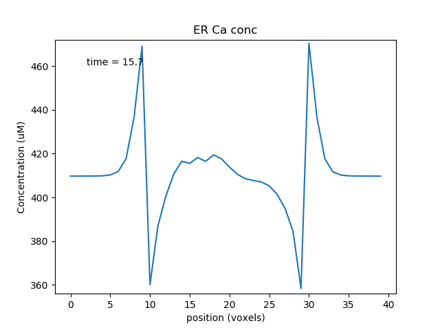
Calcium depletion and buildup in the ER due to CICR wave.¶
Multiscale model spanning PSD, spine head and dendrite¶
ex8.2_multiscale_glurR_phosph_3compt.py
This is another multiscale model on similar lines to 8.0. It is structurally and computationally more complicated, because the action is distributed between spines and dendrites, but formally it does the same thing: it turns on and stays on after a strong stimulus, due to phosphorylation of a (receptor) channel leading to greater excitability.
calcium influx -> chemical activity -> channel modulation -> electrical activity -> calcium influx.
The model is bistable as long as synaptic input keeps coming along at a basal rate, in this case 1 Hz.
Here we have two new lines, to do with addition of spines. These are discussed in detail in a later example. For now it is enough to know that the spineProto line defines one of the prototype spines to be used to put into the model, and the spineDistrib line tells the system where to put them, and how widely to space them.
import moose
import rdesigneur as rd
rdes = rd.rdesigneur(
elecDt = 50e-6,
chemDt = 0.002,
diffDt = 0.002,
chemPlotDt = 0.02,
useGssa = False,
# cellProto syntax: ['ballAndStick', 'name', somaDia, somaLength, dendDia, d
endLength, numDendSegments ]
cellProto = [['ballAndStick', 'soma', 12e-6, 12e-6, 4e-6, 100e-6, 2 ]],
chemProto = [['./chem/chanPhosph3compt.g', 'chem']],
spineProto = [['makeActiveSpine()', 'spine']],
chanProto = [
['make_Na()', 'Na'],
['make_K_DR()', 'K_DR'],
['make_K_A()', 'K_A' ],
['make_Ca()', 'Ca' ],
['make_Ca_conc()', 'Ca_conc' ]
],
passiveDistrib = [['soma', 'CM', '0.01', 'Em', '-0.06']],
spineDistrib = [['spine', '#dend#', '50e-6', '1e-6']],
chemDistrib = [['chem', '#', 'install', '1' ]],
chanDistrib = [
['Na', 'soma', 'Gbar', '300' ],
['K_DR', 'soma', 'Gbar', '250' ],
['K_A', 'soma', 'Gbar', '200' ],
['Ca_conc', 'soma', 'tau', '0.0333' ],
['Ca', 'soma', 'Gbar', '40' ]
],
adaptorList = [
[ 'psd/chan_p', 'n', 'glu', 'modulation', 0.1, 1.0 ],
[ 'Ca_conc', 'Ca', 'spine/Ca', 'conc', 0.00008, 8 ]
],
# Syn input basline 1 Hz, and 40Hz burst for 1 sec at t=20. Syn weight
# is 0.5, specified in 2nd argument as a special case stimLists.
stimList = [['head#', '0.5','glu', 'periodicsyn', '1 + 40*(t>10 && t<11)']],
plotList = [
['soma', '1', '.', 'Vm', 'Membrane potential'],
['#', '1', 'spine/Ca', 'conc', 'Ca in Spine'],
['#', '1', 'dend/DEND/Ca', 'conc', 'Ca in Dend'],
['#', '1', 'spine/Ca_CaM', 'conc', 'Ca_CaM'],
['head#', '1', 'psd/chan_p', 'conc', 'Phosph gluR'],
['head#', '1', 'psd/Ca_CaM_CaMKII', 'conc', 'Active CaMKII'],
]
)
moose.seed(123)
rdes.buildModel()
moose.reinit()
moose.start( 25 )
rdes.display()
This is how it works:
This is a ball-and-stick model with a couple of spines sitting on the dendrite. The spines get synaptic input onto NMDARs and gluRs. There is a baseline input rate of 1 Hz thoughout, and there is a burst at 40 Hz for 1 second at t = 10s.
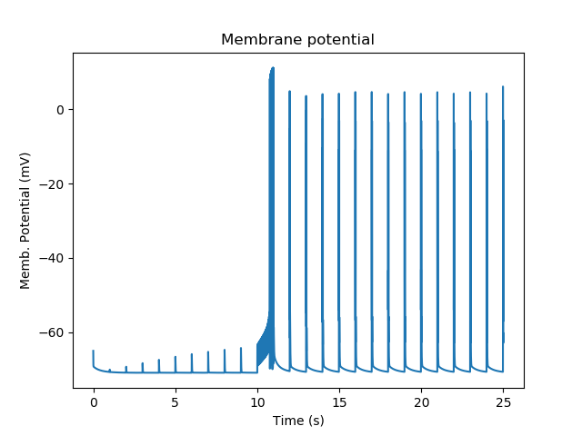
Membrane potential responses of cell with synaptic input and multiscale signaling¶
At baseline, we just have small EPSPs and little Ca influx. A burst of strong synaptic input causes Ca entry into the spine via NMDAR.
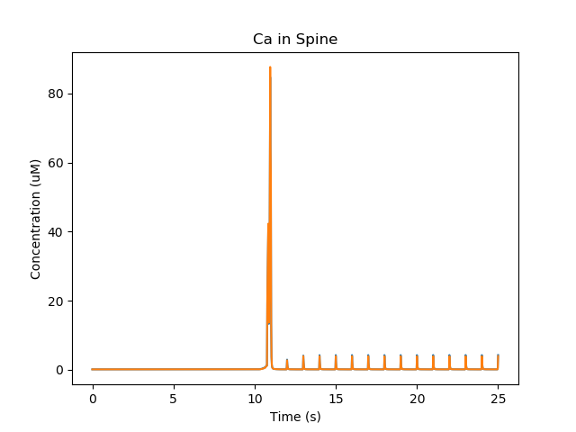
Calcium influx into spine.¶
Ca diffuses from the spine into the dendrite and spreads. In the graph below we see how Calcium goes into the 50-odd voxels of the dendrite.
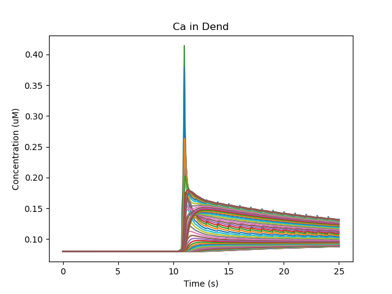
Calcium influx and diffusion in dendrite.¶
The Ca influx into the spine triggers activation of CaMKII and its translocation to the PSD, where it phosphorylates and increases the conductance of gluR. We have two spines with slightly different geometry, so the CaMKII activity differs slightly.
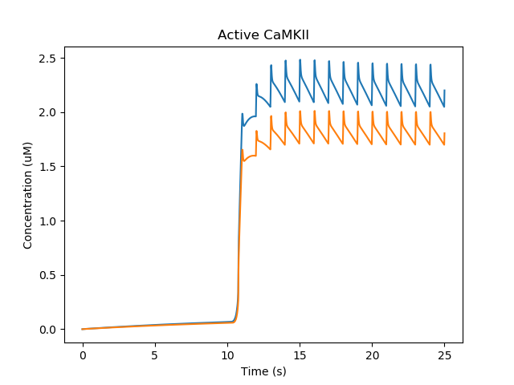
Activation of CaMKII and translocation to PSD¶
Now that gluR has a greater weight, the baseline synaptic input keeps Ca trickling in enough to keep the CaMKII active.
Here are the reactions:
Ca+CaM <===> Ca_CaM; Ca_CaM + CaMKII <===> Ca_CaM_CaMKII (all in
spine head, except that the Ca_CaM_CaMKII translocates to the PSD)
chan ------Ca_CaM_CaMKII-----> chan_p; chan_p ------> chan (all in PSD)
Suggestions:
Add GABAR using make_GABA(), put it on soma or dendrite. Stimulate it after 20 s to see if you can turn off the sustained activation
Replace the 'periodicsyn' in stimList with 'randsyn'. This gives Poisson activity at the specified mean frequency. Does the switch remain reliable?
What are the limits of various parameters for this switching? You could try basal synaptic rate, burst rate, the various scaling factors for the adaptors, the densities of various channels, synaptic weight, and so on.
In real life an individual synaptic EPSP is tiny, under a millivolt. How many synapses would you need to achieve this kind of switching? You can play with # of synapses by altering the spacing between spines as the third argument of spineDistrib.
Multiscale model in which spine geometry changes due to signaling¶
ex8.3_spine_vol_change.py
This model is very similar to 8.2. The main design difference is that adaptor, instead of just modulating the gluR conductance, scales the entire spine cross-section area, with all sorts of electrical and chemical ramifications. There are a lot of plots, to illustrate some of these outcomes.
import moose
import rdesigneur as rd
rdes = rd.rdesigneur(
elecDt = 50e-6,
chemDt = 0.002,
diffDt = 0.002,
chemPlotDt = 0.02,
useGssa = False,
stealCellFromLibrary = True, # Simply move library model to use for sim
cellProto = [['ballAndStick', 'soma', 12e-6, 12e-6, 4e-6, 100e-6, 2 ]],
chemProto = [['./chem/chanPhosph3compt.g', 'chem']],
spineProto = [['makeActiveSpine()', 'spine']],
chanProto = [
['make_Na()', 'Na'],
['make_K_DR()', 'K_DR'],
['make_K_A()', 'K_A' ],
['make_Ca()', 'Ca' ],
['make_Ca_conc()', 'Ca_conc' ]
],
passiveDistrib = [['soma', 'CM', '0.01', 'Em', '-0.06']],
spineDistrib = [['spine', '#dend#', '50e-6', '1e-6']],
chemDistrib = [['chem', '#', 'install', '1' ]],
chanDistrib = [
['Na', 'soma', 'Gbar', '300' ],
['K_DR', 'soma', 'Gbar', '250' ],
['K_A', 'soma', 'Gbar', '200' ],
['Ca_conc', 'soma', 'tau', '0.0333' ],
['Ca', 'soma', 'Gbar', '40' ]
],
adaptorList = [
# This scales the psdArea of the spine by # of chan_p. Note that
# the cross-section area of the spine head is identical to psdArea.
[ 'psd/chan_p', 'n', 'spine', 'psdArea', 0.1e-12, 0.01e-12 ],
[ 'Ca_conc', 'Ca', 'spine/Ca', 'conc', 0.00008, 8 ]
],
# Syn input basline 1 Hz, and 40Hz burst for 1 sec at t=20. Syn wt=10
stimList = [['head#', '10','glu', 'periodicsyn', '1 + 40*(t>10 && t<11)']],
plotList = [
['soma', '1', '.', 'Vm', 'Membrane potential'],
['#', '1', 'spine/Ca', 'conc', 'Ca in Spine'],
['#', '1', 'dend/DEND/Ca', 'conc', 'Ca in Dend'],
['head#', '1', 'psd/chan_p', 'n', 'Amount of Phospho-chan'],
['head#', '1', 'spine/CaMKII', 'conc', 'Conc of CaMKII in spine'],
['head#', '1', '.', 'Cm', 'Capacitance of spine head'],
['head#', '1', '.', 'Rm', 'Membrane res of spine head'],
['head#', '1', '.', 'Ra', 'Axial res of spine head'],
['head#', '1', 'glu', 'Gbar', 'Conductance of gluR'],
['head#', '1', 'NMDA', 'Gbar', 'Conductance of NMDAR'],
]
)
moose.seed(123)
rdes.buildModel()
moose.reinit()
moose.start( 25 )
rdes.display()
The key adaptor line is as follows:
[ 'psd/chan_p', 'n', 'spine', 'psdArea', 0.1e-12, 0.01e-12 ]
Here, we use the phosphorylated chan_p molecule in the PSD as a proxy for processes that control spine size. We operate on a special object called spine which manages many aspects of spines in the model (see below). Here we control the psdArea, which defines the cross-section area of the spine head and by extension of the PSD too. We keep a minimum spine area of 0.1 um^2, and a scaling factor of 0.01um^2 per phosphorylated molecule.
The reaction system is identical to the one in ex8.2:
Ca+CaM <===> Ca_CaM; Ca_CaM + CaMKII <===> Ca_CaM_CaMKII (all in
spine head, except that the Ca_CaM_CaMKII translocates to the PSD)
chan ------Ca_CaM_CaMKII-----> chan_p; chan_p ------> chan (all in PSD)
Rather than list all the 10 plots, here are a few to show what is going on.
First, just the spiking activity of the cell. Here the burst of activity is followed by a few seconds of enhanced synaptic weight, followed by subthreshold EPSPs:
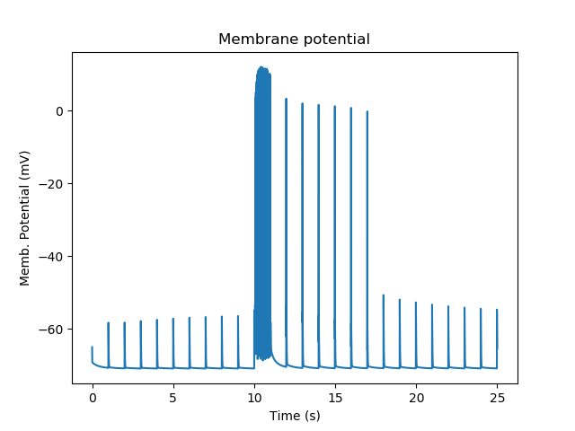
Membrane potential and spiking.¶
Then, we fast-forward to the amount of chan_p which is the molecule that controls spine size scaling:
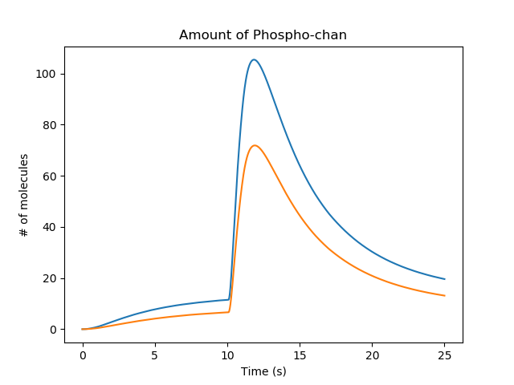
Molecule that controles spine size¶
This causes some obvious outcomes. One of them is to increase the synaptic conductance of the glutamate receptor. The system assumes that the conductance of all channels in the PSD scales linearly with the psdArea.
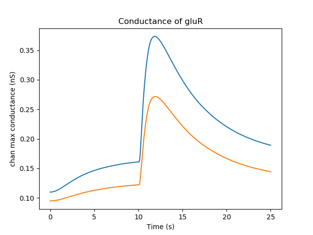
Conductance of glutamate receptor¶
Here is one of several non-intuitive outcomes. Because the spine volume has increased, the concentration of molecules in the spine is diluted out. So the concentration of active CaMKII actually falls when the spine gets bigger. In a more detailed model, this would be a race between the increase in spine size and the time taken for diffusion and further reactions to replenish CaMKII. In the current model we don't have a diffusive coupling of CaMKII to the dendrite, so this replenishment doesn't happen.
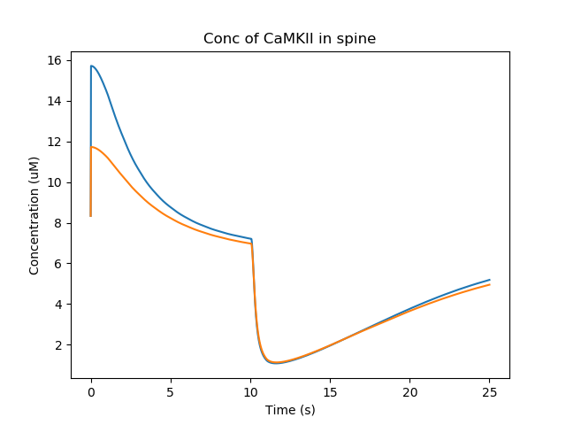
Concentration of CaMKII in the spine¶
In the simulation we display several other electrical and chemical properties that change with spine size. The diffusion properties also change since the cross-section areas are altered. This is harder to visualize but has large effects on coupling to the dendrite, especially if the shaftDiameter is the parameter scaled by the signaling.
Suggestions:
The Spine class (instance: spine) manages several possible scaling targets on the spine geometry: shaftLength, shaftDiameter, headLength, headDiameter, psdArea, headVolume, totalLength. Try them out. Think about mechanisms by which molecular concentrations might affect each.
When volume changes, we assume that the molecular numbers stay fixed, so concentration changes. Except for buffered molecules, where we assume concentration remains fixed. Use this to design a bistable simply relying on molecules and spine geometry terms.
Even more interesting, use it to design an oscillator. You could look at Bhalla, BiophysJ 2011 for some ideas.
Morphology: Load .swc morphology file and view it¶
ex9.0_load_neuronal_morphology_file.py
Here we build a passive model using a morphology file in the .swc file
format (as used by NeuroMorpho.org). The morphology file is predefined
for Rdesigneur and resides in the directory ./cells. We apply a
somatic current pulse, and view the somatic membrane potential in a
plot, as before. To make things interesting we display the morphology in
3-D upon which we represent the membrane potential as colors.
import sys
import moose
import rdesigneur as rd
if len( sys.argv ) > 1:
fname = sys.argv[1]
else:
fname = './cells/h10.CNG.swc'
rdes = rd.rdesigneur(
cellProto = [[fname, 'elec']],
stimList = [['soma', '1', '.', 'inject', 't * 25e-9' ]],
plotList = [['#', '1', '.', 'Vm', 'Membrane potential'],
['#', '1', 'Ca_conc', 'Ca', 'Ca conc (uM)']],
moogList = [['#', '1', '.', 'Vm', 'Soma potential']]
)
rdes.buildModel()
moose.reinit()
rdes.displayMoogli( 0.001, 0.1, rotation = 0.02 )
Here the new concept is the cellProto line, which loads in the specified cell model:
`[ filename, cellname ]`
The system recognizes the filename extension and builds a model from the swc file. It uses the cellname elec in this example.
We use a similar line as in the reaction-diffusion example, to build up a Moogli display of the cell model:
`moogList = [['#', '1', '.', 'Vm', 'Soma potential']]`
Here we have:
# : the path to use for selecting the compartments to display.
This wildcard means use all compartments.
1 : The expression to use for the compartments. Again, `1` means use
all of them.
. : Which object in the compartment to display. Here we are using the
compartment itself, so it is just a dot.
Vm : Field to display
Soma potential : Title for display.
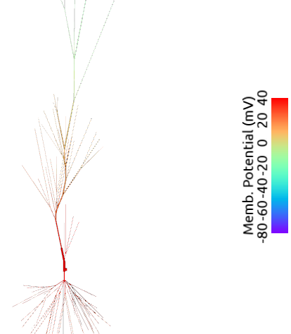
3-D display for passive neuron¶
Suggestions:
The tutorial directory already has a number of pre-loaded files from NeuroMorpho. Pass them in to ex9.0 on the command line:
python ex9.0_load_neuronal_morphology_file.py <morpho.swc>
Grab other morphology files from NeuroMorpho.org, try them out.
Build an active neuron model by putting channels into a morphology file¶
ex9.1_chans_in_neuronal_morph.py
Here we load in a morphology file and distribute voltage-gated ion channels
over the neuron. The voltage-gated channels are obtained from a
number of channelML files, located in the ./channels subdirectory.
Since we have a spatially extended neuron, we need to specify the
spatial distribution of channel densities too.
import moose
import rdesigneur as rd
rdes = rd.rdesigneur(
chanProto = [
['./chans/hd.xml'],
['./chans/kap.xml'],
['./chans/kad.xml'],
['./chans/kdr.xml'],
['./chans/na3.xml'],
['./chans/nax.xml'],
['./chans/CaConc.xml'],
['./chans/Ca.xml']
],
cellProto = [['./cells/h10.CNG.swc', 'elec']],
chanDistrib = [ \
["hd", "#dend#,#apical#", "Gbar", "50e-2*(1+(p*3e4))" ],
["kdr", "#", "Gbar", "p < 50e-6 ? 500 : 100" ],
["na3", "#soma#,#dend#,#apical#", "Gbar", "850" ],
["nax", "#soma#,#axon#", "Gbar", "1250" ],
["kap", "#axon#,#soma#", "Gbar", "300" ],
["kap", "#dend#,#apical#", "Gbar",
"300*(H(100-p*1e6)) * (1+(p*1e4))" ],
["Ca_conc", "#", "tau", "0.0133" ],
["kad", "#soma#,#dend#,#apical#", "Gbar", "50" ],
["Ca", "#", "Gbar", "50" ]
],
stimList = [['soma', '1', '.', 'inject', '(t>0.02) * 1e-9' ]],
plotList = [['#', '1', '.', 'Vm', 'Membrane potential'],
['#', '1', 'Ca_conc', 'Ca', 'Ca conc (uM)']],
moogList = [['#', '1', 'Ca_conc', 'Ca', 'Calcium conc (uM)', 0, 120],
['#', '1', '.', 'Vm', 'Soma potential']]
)
rdes.buildModel()
moose.reinit()
rdes.displayMoogli( 0.0002, 0.052 )
Here we make more extensive use of two concepts which we've already seen from the single compartment squid model:
chanProto: This defines numerous channels, each of which is of the form:
[ filename ]or
[ filename, channelname ]or
[ channelFunction(), channelname ]
If the channelname is not specified the system uses the last part of the channel name, before the filetype suffix.
chanDistrib: This defines the spatial distribution of each channel type. Each line is of a form that should be familiar now:
[channelname, region_in_cell, parameter, expression_string]
The channelname is the name of the prototype from chanproto. This is usually an ion channel, but in the example above you can also see a calcium concentration pool defined.
The region_in_cell is typically defined using wildcards, so that it generalizes to any cell morphology. For example, the plain wildcard
#means to consider all cell compartments. The wildcard#dend#means to consider all compartments with the stringdendsomewhere in the name. Wildcards can be comma-separated, so#soma#,#dend#means consider all compartments with either soma or dend in their name. The naming in MOOSE is defined by the model file. Importantly, in .swc files MOOSE generates names that respect the classification of compartments into axon, soma, dendrite, and apical dendrite compartments respectively. SWC files generate compartment names such as:soma_<number> dend_<number> apical_<number> axon_<number>
where the number is automatically assigned by the reader. In order to select all dendritic compartments, for example, one would use "#dend#" where the "#" acts as a wildcard to accept any string. - The parameter is usually Gbar, the channel conductance density in S/m^2. If Gbar is zero or less, then the system economizes by not incorporating this channel mechanism in this part of the cell. Similarly, for calcium pools, if the tau is below zero then the calcium pool object is simply not inserted into this part of the cell. - The expression_string defines the value of the parameter, such as Gbar. This is typically a function of position in the cell. The expression evaluator knows about several parameters of cell geometry. All units are in metres:
x, y and z coordinates.
g, the geometrical distance from the soma
p, the path length from the soma, measured along the dendrites.
dia, the diameter of the dendrite.
L, The electrotonic length from the soma (no units).
Along with these geometrical arguments, we make liberal use of the ternary expressions like p < 50e-6 ? 500 : 100 or multiplying a channel density with a logical function or Heaviside function H(x) to set up the channel distributions. The expression evaluator also knows about pretty much all common algebraic, trignometric, and logarithmic functions, should you wish to use these.
Also note the two Moogli displays. The first is the calcium concentration. The second is the membrane potential in each compartment. Easy!
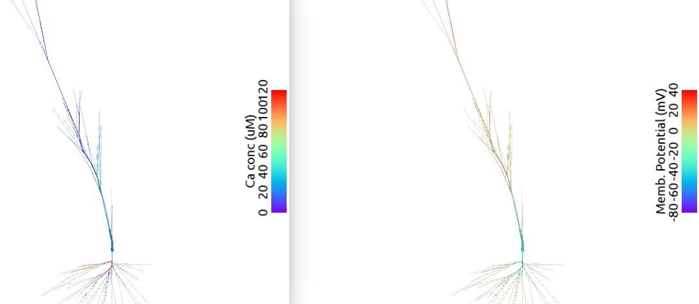
3-D display for active neuron¶
Suggestions:
Try another morphology file.
Try different channel distributions by editing the chanDistrib lines.
There are numerous predefined channels available within Rdesigneur. These can be defined using the following chanProto options:
['make_HH_Na()', 'HH_Na'] ['make_HH_K_DR()', 'HH_K'] ['make_Na()', 'Na'] ['make_K_DR()', 'K_DR'] ['make_K_A()', 'K_A'] ['make_K_AHP()', 'K_AHP'] ['make_K_C()', 'K_C'] ['make_Ca()', 'Ca'] ['make_Ca_conc()', 'Ca_conc'] ['make_glu()', 'glu'] ['make_GABA()', 'GABA']Then the chanDistrib can refer to these channels instead.
Deliver stimuli on the dendrites rather than the soma.
Build a spiny neuron from a morphology file and put active channels in it.¶
ex9.2_spines_in_neuronal_morpho.py
This model is one step elaborated from the previous one, in that we now also have dendritic spines. MOOSE lets one decorate a bare neuronal morphology file with dendritic spines, specifying various geometric parameters of their location. As before, we use an swc file for the morphology, and the same ion channels and distribution.
import moose
import pylab
import rdesigneur as rd
rdes = rd.rdesigneur(
chanProto = [
['./chans/hd.xml'],
['./chans/kap.xml'],
['./chans/kad.xml'],
['./chans/kdr.xml'],
['./chans/na3.xml'],
['./chans/nax.xml'],
['./chans/CaConc.xml'],
['./chans/Ca.xml']
],
cellProto = [['./cells/h10.CNG.swc', 'elec']],
spineProto = [['makeActiveSpine()', 'spine']],
chanDistrib = [
["hd", "#dend#,#apical#", "Gbar", "50e-2*(1+(p*3e4))" ],
["kdr", "#", "Gbar", "p < 50e-6 ? 500 : 100" ],
["na3", "#soma#,#dend#,#apical#", "Gbar", "850" ],
["nax", "#soma#,#axon#", "Gbar", "1250" ],
["kap", "#axon#,#soma#", "Gbar", "300" ],
["kap", "#dend#,#apical#", "Gbar",
"300*(H(100-p*1e6)) * (1+(p*1e4))" ],
["Ca_conc", "#", "tau", "0.0133" ],
["kad", "#soma#,#dend#,#apical#", "Gbar", "50" ],
["Ca", "#", "Gbar", "50" ]
],
spineDistrib = [['spine', '#dend#,#apical#', '20e-6', '1e-6']],
stimList = [['soma', '1', '.', 'inject', '(t>0.02) * 1e-9' ]],
plotList = [['#', '1', '.', 'Vm', 'Membrane potential'],
['#', '1', 'Ca_conc', 'Ca', 'Ca conc (uM)']],
moogList = [['#', '1', 'Ca_conc', 'Ca', 'Calcium conc (uM)', 0, 120],
['#', '1', '.', 'Vm', 'Soma potential']]
)
rdes.buildModel()
moose.reinit()
rdes.displayMoogli( 0.0002, 0.023 )
Spines are set up in a familiar way: we first define one (or more) prototype spines, and then distribute these around the cell. Here is the prototype string:
[spine_proto, spinename]
spineProto: This is typically a function. One can define one's own, but there are several predefined ones in rdesigneur. All these define a spine with the following parameters:
head diameter 0.5 microns
head length 0.5 microns
shaft length 1 micron
shaft diameter of 0.2 microns
RM = 1.0 ohm-metre square
RA = 1.0 ohm-meter
CM = 0.01 Farads per square metre.
Here are the predefined spine prototypes:
makePassiveSpine(): This just makes a passive spine with the default parameters
makeExcSpine(): This makes a spine with NMDA and glu receptors, and also a calcium pool. The NMDA channel feeds the Ca pool.
makeActiveSpine(): This adds a Ca channel to the exc_spine. and also a calcium pool.
The spine distributions are specified in a familiar way for the first few arguments, and then there are multiple (optional) spine-specific parameters:
[spinename, region_in_cell, spacing, spacing_distrib, size, size_distrib, angle, angle_distrib ]
Only the first two arguments are mandatory.
spinename: The prototype name
region_in_cell: Usual wildcard specification of names of compartments in which to put the spines.
spacing: Math expression to define spacing between spines. In the current implementation this evaluates to
1/probability_of_spine_per_unit_length. Defaults to 10 microns. Thus, there is a 10% probability of a spine insertion in every micron. This evaluation method has the drawback that it is possible to space spines rather too close to each other. If spacing is zero or less, no spines are inserted.spacing_distrib: Math expression for distribution of spacing. In the current implementation, this specifies the interval at which the system samples from the spacing probability above. Defaults to 1 micron.
size: Linear scale factor for size of spine. All dimensions are scaled by this factor. The default spine head here is 0.5 microns in diameter and length. If the scale factor were to be 2, the volume would be 8 times as large. Defaults to 1.0.
size_distrib: Range for size of spine. A random number R is computed in the range 0 to 1, and the final size used is
size + (R - 0.5) * size_distrib. Defaults to 0.5angle: This specifies the initial angle at which the spine sticks out of the dendrite. If all angles were zero, they would all point away from the soma. Defaults to 0 radians.
angle_distrib: Specifies a random number to add to the initial angle. Defaults to 2 PI radians, so the spines come out in any direction.
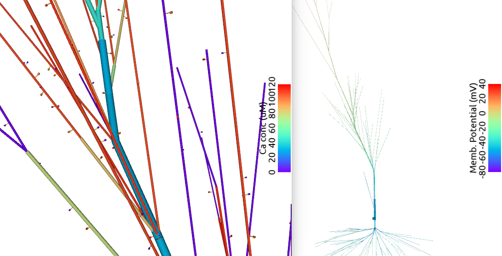
3-D display for spiny active neuron¶
Suggestions:
Try different spine settings. Warning: if you put in too many spines it will take much longer to load and run!
Try different spine geometry layouts.
See if you can deliver the current injection to the spine. Hint: the name of the spine compartments is 'head#' where # is the index of the spine.
Place spines in a spiral along a dendrite¶
ex9.3_spiral_spines.py
Just for fun. Illustrates how to place spines in a spiral around the dendrite. For good measure the spines get bigger the further they are from the soma.
Note that the uniform spacing of spines is signified by the negative minSpacing term, the fourth argument to spineDistrib.
import moose
import pylab
import rdesigneur as rd
rdes = rd.rdesigneur(
cellProto = [['ballAndStick', 'elec', 10e-6, 10e-6, 2e-6, 300e-6, 50]],
spineProto = [['makePassiveSpine()', 'spine']],
spineDistrib = [['spine', '#dend#', '3e-6', '-1e-6', '1+p*2e4', '0', 'p*6.28e7', '0']],
stimList = [['soma', '1', '.', 'inject', '(t>0.02) * 1e-9' ]],
moogList = [['#', '1', '.', 'Vm', 'Soma potential']]
)
rdes.buildModel()
moose.reinit()
rdes.displayMoogli( 0.0002, 0.025, 0.02 )
Note that the uniform spacing of spines is signified by the negative minSpacing term, the fourth argument to spineDistrib.
spineDistrib = [['spine', '#dend#', '3e-6', '-1e-6', '1+p*2e4', '0', 'p*6.28e7', '0']]

3-D display of spines in a spiral¶
Suggestions:
Play with expressions for spine size and angular placement.
See what happens if the segment size gets smaller than the spine spacing.
Rdesigneur command reference¶
Rdesigneur is a Python class used to build multiscale neuronal models involving Reaction-Diffusion and Electrical SIGnaling in NEURons. The stages in its use are illustrated in the following dummy code snippet:
# 1. Load in the libraries
import moose
import rdesigneur as rd
# 2. Define the arguments. This does most of the model setup
rdes = rd.rdesigneur( args )
# 3. Tweak parameters of model building-blocks, for example:
a = moose.element( '/library/chem/kinetics/a' )
a.diffConst = 0
# 4. Build the model
rdes.buildModel()
# 5. Tweak values in the constructed model, for example
bv = moose.vec( '/model/chem/dend/b' )
bv[0].concInit *= 2
# 6. Run the model
moose.reinit()
moose.start( runtime )
# 7. Display and/or save model output
rdes.dispay()
The rdesigneur arguments are provided in the standard Python keyword-argument format. For example:
rdes = rd.rdesigneur(
turnOffElec = True,
chemDt = 0.05,
...
chemProto = [ ['makeChemOscillator()', 'osc'] ],
...
plotList = [ rd.rplot( relpath = 'dend/a', field = 'conc', title = '[a] (uM)' ) ],
...
)
Each argument has a default, hence even building rdesigneur without arguments will produce a correct, if not very interesting model.
Rdesigneur and Prototypes: Rdesigneur assembles models by taking prototype objects and replicating them into the model. These prototypes can be chemical reaction systems, ion channels, spines, or entire neurons. All the prototypes are placed under the MOOSE object /library. When building the model, it looks up prototypes by name and places them into the resulting model. The rdesigneur constructor (step 2 above) builds all these prototypes. Once they are in place, the BuildModel() method (step 4 above) performs the assembly.
Below we provide the usage of the argument list to rdesigneur, which does most of the model specification.
turnOffElec¶
Type: bool
Default: False
Use: Turns off electrical calculations. It is a good idea to set this flag True if the model doesn't use electrical calculations, it can make the calculations many times faster.
useGssa¶
Type: bool
Default: True
Use: Turns on the use of the Gillespie Stochastic Simulation Algorithm (GSSA) in dendritic spines. Advisable in models where you worry about stochasticity. Also it typically makes the simulations run faster.
combineSegments¶
Type: bool
Default: True
Use: Flag to pass on to the NeuroML loader to tell it to combine segments.
stealCellFromLibrary¶
Type: bool
Default: False
Use: Use the prototype loaded-in neuron itself for the main simulation run, removing it from the available prototypes. It is advisable to set this to True if the model is large and complicated. It saves memory and in some cases runs more reliably.
verbose¶
Type: bool
Default: True
Use: Tell rdesigneur to be garrulous when loading and reporting status and errors.
addSomaChemCompt¶
Type: bool
Default: False
Use: Specify that the largest chemical compartment (by volume) should be assigned to the cell soma. Most multiscale models don't bother with a soma chemical compartment, and are happy with dendrite and possibly spines, so this defaults to False.
addEndoChemCompt¶
Type: bool
Default: False
Use: Specify that each of the chemical compartments should contain an internal endo-compartment. This is typically used for the endoplasmic reticulum in models of calcium-induced calcium release (CICR), however, the EndoCompartments are quite general and can be used for defining chemistry and transport involving any membrane-bound organelle. In MOOSE, when you create an EndoCompartment it must be surrounded by a regular compartment, and a voxel of the EndoCompartment appears within every voxel of the surrounding compartment.
diffusionLength¶
Type: double
Default: 2e-6 (2 microns)
Use: This sets the spatial discretization length of reaction-diffusion models. If the diffusion constant is D (in micron^2/sec), then the diffusionLength should be less than D microns for signaling events that take 1 second. If the signaling is faster, diffusionLength should be smaller.
temperature¶
Type: double
Default: 32 degrees Celsius
Use: ChannelML definitions of ion channels use this value to modulate their kinetics.
chemDt¶
Type: double
Default: 0.1 s
Use: Specify timestep for chemical computations. Note that internally the MOOSE solver will probably use finer or adaptive timesteps. The chemDt just ensures that all the chemical values in different solvers will be synchronized at this interval. You will want to make this somewhat smaller (0.01 to 0.001 s) in the case of multiscale simulations with tight coupling between electrical and signaling events.
diffDt¶
Type: double
Default: 0.01 s
Use: Specify timestep for diffusion computations, as well as cross-compartment reactions and molecular transport across membrane pores. This timestep does not apply to voltage-gated and synaptic channels handled by the electrical solver, for that use elecDt. You will want to make this somewhat smaller (0.01 to 0.001 s) in the case of multiscale simulations with tight coupling between electrical and signaling events.
elecDt¶
Type: double
Default: 50e-6 s
Use: Specify timestep for electrical calculations, used by the HSolver in MOOSE to carry out calculations using Gaussian Elimination and the Crank- Nicolson method for ion channels. This works well for slower channels, but if you have particularly fast channel kinetics you may wish to use elecDt of 10 to 20 us.
chemPlotDt¶
Type: double
Default: 1 s
Use: Timestep for storing and plotting chemical values.
elecPlotDt¶
Type: double
Default: 100e-6 s
Use: Timestep for storing and plotting electrical values.
funcDt¶
Type: double
Default: 100e-6 s
Use: Timestep for performing Function calculations for inputs and stimuli, for electrical models. Only used for electrical models, i.e., when turnOffElec is False. Otherwise the system uses a funcDt equal to the chemDt.
cellProto¶
Type: List of lists
Default: [] (empty list). This generates the Hodgkin-Huxley configuration where length and diameter are 500 microns, RM = 0.333, RA = 3000, and CM = 0.01 F/m^2, but no active channels.
Use: This defines which neuronal model specification to use. There are many options here:
zero args: make standard soma corresponding to the Hodgkin-Huxley model. length and diameter are both 500 um.
[name, library_proto_name]: uses library prototype object.
[fname.suffix, cellname ]: Loads cell from file. The file type is identified by the suffix, and can be :
.nml: NeuroML
.xml: NeuroML
.swc: NeuroMorpho.org format for cellular morphology
.p: Genesis format
[moose<Classname>, cellname]: Makes prototype from MOOSE class.
[funcname, cellname]: Calls named function with specified name of cell to be made.
[path, cellname]: Copies path to library as proto
[libraryName, cellname]: Renames library entry as prototype.
[somaProto, name, somaDia=5e-4, somaLen=5e-4] Creates a soma with optional specified diameter and length. Defaults as shown.
[ballAndStick,name, somaDia=10e-6, somaLen=10e-6, dendDia=4e-6, dendLen=200e-6, numDendSeg=1] Creates a ball-and-stick with required type and name arguments. The remaining arguments are optional. Defaults as shown.
spineProto¶
Type: List of lists
Default: [] (empty list). This does not define any spines.
Use: Each list entry should be a list containing two strings: source and destination. The source defines how to build the prototype. The destination specifies its name. If the requested destination is an object that already exists in the library, the system doesn't do anything.
The source can be any of:
functionName(): Call specified Python function, with the destination as the argument. The function is expected to build a prototype of the requested name on '/library'. The following utility functions are built-in:
makePassiveSpine(): Makes a 2-compartment spine with the following parameters:
shaft name: shaft
shaft length = 1 micron
shaft diameter = 0.2 micron
head name: head
head length = 0.5 micron
head diameter = 0.5 micron
RM = 1.0
RA = 1.0
CM = 0.01
makeExcSpine(): Same as above but adds in glutamate and NMDA receptors and a calcium pool. The calcium pool has a pumping tau of 13.333 ms, and is present in the volume of the spine head. Both receptors have conductances in the form of dual-exponential alpha functions, with a separate opening and closing tau. The glutamate receptor has the following parameters:
name: glu
opening tau: 2 ms
closing tau: 9 ms
Gbar, ie, conductance per unit area: 200 Siemens/m^2
The NMDA receptor has the following parameters:
name: NMDA
opening tau: 20 ms
closing tau: 20 ms
Gbar, ie, conductance per unit area: 80 Siemens/m^2
makeActiveSpine(): Same as above, but also adds in a voltage-gated calcium channel with Gbar = 10 Siemens/m^2 into the spine head.
Path of existing object in memory, such as /library/source. In this case rdesigneur renames the object to /library/destination.
A filename, with any of the suffices:
.nml: NeuroML
.xml: NeuroML
.swc: NeuroMorpho.org format for cellular morphology
.p: Genesis format
moose::SymCompartment: Make a SymCompartment for the spine. Deprecated.
moose::Compartment: Make a Compartment for the spine. Deprecated.
chanProto¶
Type: List of lists
Default: [] (empty list). The empty list does not define any channels.
Use: Each list entry must have a string for the source. It can optionally have a second string for the destination, which is the name to give to the source channel when it is constructed on /library.
The following options are available for specifying the source for making channel prototypes:
Filepath. This is relative to the working directory. The following file types are known:
xml: ChannelML, which is a subset of NeuroML
nml: ChannelML, which is a subset of NeuroML
Channels in thse formats are available from Open Source Brain,
Predefined channel prototypes, available as functions within rdesigneur. This is indicated by the use of braces after the name. The following prototypes are currently available:
make_HH_Na(): Make the classical Hodgkin-Huxley Na channel, with kinetics scaled to SI units.
make_HH_K(): Classical HH delayed rectifier K channel.
make_Na(): Hippocampal pyramidal Na channel from Traub 1991.
make_K_DR(): Hippocampal pyramidal K delayed rectifier channel from Traub 1991.
make_K_A(): Hippocampal pyramidal A-type K channel from Traub 1991.
make_Ca_conc(): A calcium pool with tau 13.333 ms. This is required for the calcium dynamics of several channels.
make_Ca(): Voltage-gated Calcium channel, based on Traub 1991. It requires the Ca_conc.
make_K_AHP: Voltage and calcium-gated afterhyperpolarization- activated K channel, from Traub 1991. Note that this channel requires the presence of the Ca_conc.
make_K_C: Voltage and calcium-dependent K channel from Traub 1991. This channel requires the presence of the Ca_conc.
make_glu(): Glutamate receptor in the form of dual-exponential alpha functions, with a separate opening (2ms) and closing (9ms) tau. Reversal potential = 0 mV.
make_GABA(): GABA receptor in the form of dual-exponential alpha functions, with a separate opening (4ms) and closing (9ms) tau. Reversal potential = -65 mV.
User-defined channel definition functions. These can be from external Python files, using the full path to the file name minus the suffix. The specific function within it is then specified. For example,
chanProto = [ ['/home/user/models/channelProtos.make_K_AHP()', 'K_AHP'] ]
chemProto¶
Type: List of lists
Default: [] (empty list). The empty list does not define any chemical systems.
Use: Each list entry must have a string for the source. It can optionally have a second string for the destination, which is the name to give to the source chemical system when it is constructed on /library.
The following options are available for specifying the source for making channel prototypes:
Filepath. This is relative to the working directory. The following file types are known:
xml: SBML
sbml: SBML
.g: GENESIS Kinetikit (kkit.g) format.
Channels in thse formats are available from the DOQCS database, and from the BioModels database,
Predefined functions. At present only one such function is available, makeChemOscillator()
- User-defined functions.
These can be from external Python files, using the full path to the file name minus the suffix. The specific function within it is then specified. For example,
chemProto = [ ['/home/user/models/chemProtos.make_Osc()', 'osc'] ]Pool objects. These are created on the fly using the form
chemProto = [['moose:Pool', 'a']]
passiveDistrib¶
Type: List of lists
Default: [] (empty list). Does nothing.
Use; This is for adjusting the passive properties of the neuron. Each list entry is a list of strings, of the form:
[path, field, expr, [field, expr]...]
Here the path is a MOOSE wildcard path, which defines one or more objects. Briefly, the '#' character specifies any string, and the double '##' specifies any string at any level in the tree. For example, to specify any compartment with the string 'dend' you would use '#dend#' and to specify any object anywhere in the tree you would use '##'.
The field can be any one of the following:
RM: Membrane resistivity, in ohms.m^2
RA: Axial resistivity, in ohms.m
CM: Membrane specific capacitance, in Farads/m^2
Rm: Absolute membrane resistance of that segment, in ohms.
Ra: Absolute axial resistance of that segment, in ohms.
Cm: Absolute membrane capacitance of that segment, in Farads.
Em: Membrane resting potential, in Volts.
initVm: Initial value to set the membrane potential, in Volts.
The expr is an expression string that is evaluated to give the desired value for the field. This can be as simple as the value itself, but can be a much more interesting function of geometrical properties of the cell. The geometry arguments available to the expr include:
p: Path length in metres from the soma, measured along the dendrite.
g: Geometrical distance from the soma.
L: Number of electronic length constants from the soma
len: length of the segment of dendrite
dia: diameter of the segment of dendrite
maxP: Maximum path length of any dendrite in the cell.
maxG: Maximum geometrical distance of any dendrite from soma
maxL: Maximum electrotonic distance of any dendrite from the soma
Putting these together, here is an example of using the passiveDistrib:
passiveDistrib = [
[ 'soma', 'RM', '1.0', 'CM', '0.02' ],
[ '#dend#', 'RM', '1.5 + 0.5*(p>200e-6)', 'CM', '0.01' ],
]
This means set the soma RM to 1.0, and CM to 0.02, leaving the RA as the default. The scaled value for Rm, Ra, and Cm are computed by scaling these terms according to the soma dimensions. For all dendrite compartments, set the RM to 1.5 provided it is closer than 200 microns dendritic path length from the soma, and set the RM to 2.0 for all dendritic compartments further than this. Finally, for all dendrite compartments, set CM to 0.01. Note that again the absolute Rm and Cm will be scaled according to the local compartment dimensions.
spineDistrib¶
Type: List of lists
Default: [] (empty list). Does nothing.
Use: This is for inserting dendritic spines onto the neuron. Each entry is a list of strings, of the form:
[proto, path, [spacing, minSpacing, size, sizeDistrib, angle, angleDistrib]]
Of these, the name and the path are required entries, and the remainder can be provided in pairs. The defaults for these entries are:
['spine', '#dend#,#apical#', '10e-6', '1e-6', '1', '0.5', '0', '6.2832' ]
The interpretation of the arguments is as follows:
name: This is the name of the spine prototype.
path: The wildcard path of compartments on which to insert the spines. In the example above, '#dend#,#apical#' means all compartments with the strings dend or apical in their names.
spacing: The mean spacing between spines. At present the spines are placed with a Poisson distribution. This is a math expression with the same terms as used for the passive distribution, so that the spine spacing can be a function of spine position along the dendritic tree. The form of this expression is shown again below.
minSpacing: The minimum spacing, and the increment along which the Poisson samples are taken to decide if a spine should be added. In case minSpacing is negative, the system places spines with uniform spacing along the dendritic segment. If
segment length < 0.5 * spacingthen the system falls back onto Poisson samples so that finely subdivided dendrites don't miss out on spines altogether.size: Scale factor for size from the prototype spine. All dimension of the spine are scaled by this number: shaft length, shaft diameter, head length and head diameter. This is a math expression, as shown below.
sizeDistrib: The range of distribution of sizes. This is a linear distribution centered around the defined size.
angle: The initial angle of the first spine on each dendrite compartment, in radians. This is a math expression, as shown below.
angleDistrib: The range of of angles around this initial angle. The angle will be chosen from a linear distribution centered around the centre angle, +/- angleDistrib.
The expression used for spacing, size, and angle is of the form of an an expression string that is evaluated to give the desired value for the field. This can be as simple as the value itself, but can be a much more interesting function of geometrical properties of the cell. The geometry arguments available to the expr include:
p: Path length in metres from the soma, measured along the dendrite.
g: Geometrical distance from the soma.
L: Number of electronic length constants from the soma
len: length of the segment of dendrite
dia: diameter of the segment of dendrite
maxP: Maximum path length of any dendrite in the cell.
maxG: Maximum geometrical distance of any dendrite from soma
maxL: Maximum electrotonic distance of any dendrite from the soma
For example:
['spine', '#dend#', '1e-6 + (dia<2e-6)*10', '1e-7', '1', '0.5', '6.28*p/maxP', '0']
proto: The prototype spine by the name of spine is used.
path: All compartments with the string dend in their name are used.
Spacing: The spines are only placed on branches smaller than 2 microns (otherwise the spine spacing is 10 metres). On these small branches the spacing is, on average, 1 micron.
Size: The size is anything from 50% to 150% of the prototype spine size.
Angle: The angle is proportional to the distance from the soma, such that the spines make a complete spiral (2pi) around the dendrite over its length.
chanDistrib¶
Type: List of lists
Default: [] (empty list). Does nothing.
Use: This is for inserting ion channels onto the neuron. Each entry is a list of strings, of the form:
[proto, path, field, expr, [field, expr]...]
The entries here are of the form:
proto: Specifies the name of the prototype channel to insert
path: Wildcard path of compartments in which to insert the channel
field: Field to assign to channel, almost always Gbar, to set its channel density.
expr: Expression evaluated to obtain value to assign to field. This is a mathematical expression of various geometrical properties of the cell, as listed below.
The expr can be as simple as the value itself, but can be a much more interesting function of geometrical properties of the cell. The geometry arguments available to the expr include:
p: Path length in metres from the soma, measured along the dendrite.
g: Geometrical distance from the soma.
L: Number of electronic length constants from the soma
len: length of the segment of dendrite
dia: diameter of the segment of dendrite
maxP: Maximum path length of any dendrite in the cell.
maxG: Maximum geometrical distance of any dendrite from soma
maxL: Maximum electrotonic distance of any dendrite from the soma
A typical channel distribution entry is:
["kdr", "#", "Gbar", "p < 50e-6 ? 500 : 100" ]
Here the kdr channel is inserted throughout the cell, and its conductance is at 500 Siemens/m^2 for all regions closer than 50 microns, and 100 S/m^2 for the rest of the cell. Basically there is lots of the channel on and near the soma.
chemDistrib¶
Type: List of lists
Default: [] (empty list). Does nothing.
Use: This is for inserting a chemical system into the neuron Each entry is a list of strings, of the form:
[proto, path, 'install', expr]
The entries here are of the form:
proto: Specifies the name of the prototype chemical system to insert
path: Wildcard path of compartments in which to insert the channel
'install': Default string.
expr: Expression evaluated to decide whether to install the chemical system. This is the usual function of geometrical properties of the cell. It is usually '1', to tell the system to install throughout the path.
The chemical distribution is handled specially for assignment to the neuronal morphology. This is because a given chemical system will have reactions between dendrite, ER, spines and PSD, as well as diffusion between these zones. Thus, though it would be convenient, we cannot simply define separate chemical systems for each cellular compartment. Instead we use one of two conventions for doing the assignment.
Volume based. If the model format does not permit explicit naming of the chemical compartments in the model, then the assignment is inferred from the volume of each compartment. This limitation applies for the legacy Genesis/kkit .g format. It may also apply to SBML models that do not assign suitable names for their chemical compartments. In this case the largest chemical compartment is assigned to the dendrite, the next (if present) to the spine head, and the smallest (if present) to the spine PSD.
This is modified in one of two ways by the flags addSomaChemCompt and addEndoChemCompt.
addSomaChemCompt instructs rdesigneur to use the largest compartment for the soma. The remaining compartments follow in the usual order.
addEndoChemCompt instructs rdesigneur to insert an EndoCompartment in each neuronal compartment. The volume order is now dend, dend_endo, spine-head, spine-head-endo and so on.
Name based. This works for recent SBML models, which can assign a compartment name to each of the chemical compartments. Here the expectation is that the names are one of soma, soma_endo, dend, dend_endo, spine, spine_endo, psd, psd_endo. Note that the last one, though permitted, doesn't make much biological sense.
adaptorList¶
Type: List of lists
Default: [] (empty list). Does nothing.
Use: This is for implementing an adaptor between chemical and electrical, or chemical and structural quantities. Adaptors handle the conversion between distinct concepts in chemical and electrical models. For example, Calcium concentration as computed electrically in the Ca_conc objects, can map to the calcium concentration of the ion as a molecule, where it can react, diffuse, and undergo other calcium dynamics. Another common use is to map the concentration of the molecular state of an ion channel, to its conductance. The adaptor applies the conversion equation y = mx + c where y is the target value, x is the source value, m is the slope of the conversion, and c is the offset.
Adaptors automatically average over multiple inputs if the mapping requires. Typically electrical segments each contain many chemical voxels, so the adaptor averages all the source chemical quantities to apply to the corresponding electrical quantity. Similarly, each chemical timestep is typically much longer than the electrical timestep, so the adaptor averages the electrical quantity over the entire duration of the chemical timestep.
Each entry is a list of strings, of the form:
[source, source_field, dest, dest_field, offset, scaling]
The entries here are:
source: Specifies the path of the objects whose quantities need to be converted. In the case of chemical quantities, the path starts with the compartment name, one of dend, spine, or psd. So the molecule Ca in the dendrite would be identified as dend/Ca.
source_field: The field on the source object whose value is to be used.
dest: Path of destination object, whose quantities will be assigned. As above, chemical quantities are prefixed by their compartment name.
dest_field: Field to be assigned on the destination object.
offset: Double. In the conversion, what is the value of the dest_field when the source value is zero?. In other words, the quantity c in the conversion equation y = mx + c
scaling: Double. The slope m.
stimList¶
Type: List of lists
Default: [] (empty list). Does nothing.
Use: Each entry is a list of strings, as follows:
[path, geometry_expr, dest, dest_field, time_expr]
- The entries here are:
path: The usual MOOSE wildcard path to identify electrical compartments over which the stimulus will extend. Note that the stimulus may be to a chemical entity, but the spatial location is specified in terms of the electrical compartments in which the chemical system is embedded.
geometry_expr. This is the usual function of geometrical properties of the cell. If it is non-zero, then the stimulus will apply. There is a special case for synaptic inputs in which the geometry_expr is repaced with the synaptic weight, recorded as a string.
dest. This is the destination object for the stimulus.
dest_field. This is the field on the destination object to be assigned. There is a special case for synaptic inputs, where the field can be periodicsyn or randsyn, representing periodic and random synaptic input respectively.
time_expr: This is the time expression of the value of the stimulus. Unlike the geometry_expr, the time_expr can take the predefined variable t which is the current simulation time. The time_expr does not have access to the geometry arguments.
Example 1:
['head#', '0.5','glu', 'periodicsyn', '1 + 40*(t>10 && t<11)']
This acts on all glutamate receptors on the spine heads. It delivers periodic synaptic input with weight 0.5 at a basal rate of 1 Hz, rising by 40Hz in the interval between 10 and 11 seconds.
Example 2:
['soma', '1', '.', 'inject', '(1+cos(t/10))*(t>31.4 && t<94)* 0.5e-9' ]
This acts to deliver a current injection on the soma. It delivers cosine input of angular frequency 1/10 radians/s, between times 31.4 and 94 seconds, with a peak amplitude of 0.5 nA.
Rdesigneur also supports keyword-based argument lists for the stimList. Here each entry is an rstim function as follows:
rd.rstim( elecpath, geom_expr, relpath, field, expr )
The default values of the arguments are
rd.rstim(elecpath='soma', geom_expr='1', relpath='.', field='inject', expr='0')
Example 3: To get the same outcome as example 2, one could use:
rd.rstim( expr=(1+cos(t/10))*(t>31.4 && t<94)* 0.5e-9' )
because most of the arguments are the same as the defaults.
plotList¶
Type: List of lists
Default: [] (empty list). Does nothing.
Use: This displays a line plot of cellular activity. Each entry is a list as follows:
[path, geom_expr, relpath, field, title,
[mode, ymin, ymax,saveFile, saveResolution, showFlag ]
]
- The entries here are:
path: string. The usual MOOSE wildcard path to identify electrical compartments over which the plots will be sampled. Note that the stimulus may be to a chemical entity, but the spatial location is specified in terms of the electrical compartments in which the chemical system is embedded.
geom_expr: string. This is the usual function of geometrical properties of the cell. If it is non-zero, then the stimulus will apply. There is a special case for synaptic inputs in which the geometry_expr is repaced with the synaptic weight, recorded as a string.
replath: string. Relative path to object whose value is being monitored.
field: string. The field to monitor on the source object.
title: Title string for the generated plot.
mode: Optional. String to decide what kind of plot to make. Options are:
'time': Default. Plot time-series
'wave': Generate wave-plot with compartment/voxel number as x axis, value as y axis, and run through a series of frames for different time-points durign simulation.
ymin: Double. Optional. Minimum value for y axis. Default = 0.
ymax: Double. Optional. Maximum value for y axis. Default = 0. If ymin==ymax then the plot autoscales.
saveFile: string. Optional. File in which to save plot contents. Default = "", to indicate that the file is not saved. Currently it can save in csv and xml formats. nsdf will be implemented soon.
show: Bool. Optional. Flag to decide if the plot should be displayed. Default=True.
Rdesigneur also supports keyword-based argument lists for the plotList, having the same entries as above. Here are two plotList entries with identical outcomes.
['soma', '1', '.', 'Vm', 'Soma membrane potential'],
[rd.rplot( field='Vm', title= 'Soma membrane potential')],
moogList¶
Type: List of lists
Default: [] (empty list). Does nothing.
Use: This displays a 3-D plot of cellular activity. Each entry is a list as follows:
[path, geom_expr, relpath, field, title, [ymin, ymax]]
- The entries here are:
path: string. The usual MOOSE wildcard path to identify electrical compartments over which the display will be sampled. Note that the stimulus may be to a chemical entity, but the spatial location is specified in terms of the electrical compartments in which the chemical system is embedded.
geom_expr: string. This is the usual function of geometrical properties of the cell. If it is non-zero, then the stimulus will apply. There is a special case for synaptic inputs in which the geometry_expr is repaced with the synaptic weight, recorded as a string.
replath: string. Relative path to object whose value is being monitored.
field: string. The field to monitor on the source object.
title: Title string for the generated display.
ymin: Double. Minimum value for y axis. Default = 0.
ymax: Double. Maximum value for y axis. Default = 0. If ymin==ymax then the plot autoscales.
show: Bool. Flag to decide if it should be displayed. Default=True.
Rdesigneur also supports keyword-based argument lists for the moogList, having the same entries as above. Here are two moogList entries with identical outcomes.
['soma', '1', 'dend/a', 'conc', 'a Conc', 0, 600 ],
[rd.rmoog(relpath='dend/a', field='conc', title = 'a Conc', ymax=600)]
To run and display moogli, one replaces the moose.start() and the rdes.display() functions with the line:
rdes.displayMoogli(dt, runtime, rotation, fullscreen, block, azim, elev)
in which the first two arguments are required and the rest are optional and can be assigned by keywords.
The arguments are as follows:
dt: double. Time interval between frames on the moogli display
runtime: double. Simulation runtime.
rotation: double. How much to rotate the display per frame. Defaults to pi/500.
fullscreen: bool. Flag to do display on the full screen. Defaults to False.
azim: double. Azimuth setting. Defaults to 0.0
elev: double. Elevation setting. Defaults to 0.0
The moogli primer explains how to use the 3-D display.